SSHD2382 · Category 01
Design Basics & Composition
1. Scope
"Composition" is the entry-level subject of design education. It comes from the Bauhaus foundation course and later developed in Japan into the "three compositions": planar composition, colour composition and three-dimensional composition. It does not target any one kind of product. Instead, it trains one ability: organising abstract visual elements according to rules, so that the picture gains order, rhythm and meaning.
The books in this category fall roughly into three types:
| Type | Key books | What you learn |
|---|---|---|
| Formal training | Naomi Asakura's "Composition" series; Liu Guanzhong, 《綜合造型設計基礎》 | Point, line and plane; texture; volume; materials; light |
| Design principles | 《寫給大家看的設計書》, 《設計元素》, 《通用設計法則》 | Contrast, repetition, alignment, proximity, hierarchy, white space |
| Proportion & geometry | 《黃金比例》, 《設計幾何學》, 《分寸設計》 | The golden section, root rectangles, regulating lines |
flowchart LR elements["Elements<br/>point line plane volume colour texture"] --> relations["Relations<br/>size direction position spacing"] relations --> principles["Principles<br/>contrast repetition alignment proximity balance"] principles --> order["Order<br/>proportion grid rhythm"] order --> meaning["Meaning<br/>communication emotion brand"]
2. Core Concepts
2.1 Elements of Form: Point, Line, Plane, Volume
Naomi Asakura divides the elements of form into visible elements (point, line, plane, volume, colour, texture) and relational elements (direction, position, space, centre of gravity). The key point is that point, line and plane are not geometric definitions. They are relative visual impressions.
- Point: the smallest visual unit, mainly expressing "position". A single point creates a focus; two points create tension; many points form a line or a plane (points becoming a line, points becoming a plane).
- Line: the path of a moving point, with length and direction. A line's thickness, tone, spacing and direction set its mood: horizontal lines feel stable, vertical lines dignified, diagonal lines dynamic, and curves soft. Asakura also describes the "negative line" — a line implied by the boundary between two planes.
- Plane: made by a moving line or by enclosure, with shape and area. Geometric shapes feel rational, organic shapes natural, and accidental shapes (splashed ink, torn paper) carry a sense of chance.
- Volume: the subject of three-dimensional composition. It covers three kinds of material — linear members, planar members (sheets) and solid blocks — as well as the division and enclosure of space.
- Texture: the visual or tactile quality of a surface. You can create it by rubbing, spraying, scratching or repeating a unit.
2.2 Figure / Ground
Every picture contains both a "figure" (the shape we look at) and a "ground" (the background, the empty space). Good composition designs the ground on purpose: white space is not leftover space but the half that makes the figure work. Samara's 《設計元素》 sums this up as "create space, don't fill it".
2.3 Formal Rules of Composition
| Rule | English | Explanation |
|---|---|---|
| Repetition | Repetition | The same unit appears again and again, creating unity and rhythm |
| Similarity | Similarity | Units are broadly alike with small differences, giving variety within unity |
| Gradation | Gradation | Size, direction, value or spacing change step by step in proportion, creating a sense of space and movement |
| Radiation | Radiation | Elements spread out from a centre (or converge on it), giving a concentrated, strong visual effect |
| Anomaly | Anomaly | One deliberate break in a regular pattern, creating a focal point |
| Contrast | Contrast | Differences in size, light and dark, density, curved and straight |
| Concentration | Concentration | Elements are spread unevenly, dense in some areas and sparse in others, forming a visual centre of gravity |
| Texture | Texture | A surface effect made by material or by repeated detail |
| Division | Division | Cutting the picture by proportion (equal parts, golden ratio, root ratios) |
| Balance | Balance | Symmetrical balance feels steady; asymmetrical balance reaches stability through weight and distance |
2.4 The Four Design Principles: C.R.A.P.
In 《寫給大家看的設計書》, Robin Williams reduces the layout knowledge that even non-designers need to four principles. It is the most often cited framework in the whole library:
《設計的教室》 adds an important point: every object's position should have a reason. A designer should be able to explain in words "why it goes here" — alignment suggests a connection, connections build logic, and logic makes a design explainable.
2.5 Samara's 20 Rules of Good Design
The rules set out in Timothy Samara's 《設計元素》 work as a checklist for reviewing your own work (selected and rewritten):
- Have a concept.
- Communicate, don't decorate.
- Speak with one visual voice.
- Do not use more when less will do; the fewer the colours, the richer the result.
- Create space, don't fill it; be careful with symmetry — symmetry tends to feel static.
- Master value (light and dark); measure with your eyes, not just with numbers.
- Use two type families at most; treat type as you would treat an image.
- Look to history, but do not repeat it; ignore trends.
- Get moving — static means dull.
- You may break the rules, but you may not ignore them.
3. Proportion & Geometry
Kimberly Elam's 《設計幾何學》 and 《黃金比例》 analyse proportion in nature, the human body, architecture and posters. They point out that people show a consistent preference for certain proportions, especially rectangles close to 1:1.618.
- Golden section: φ ≈ 1.618. In the Fibonacci sequence (1, 1, 2, 3, 5, 8, 13…), the ratio of two neighbouring numbers approaches φ.
- Root rectangles: √2 (the A-series paper sizes, which keep their proportions when folded in half), √3, √5 and other "dynamic rectangles", which can be subdivided into harmonious grids.
- Regulating lines: Le Corbusier used diagonals and parallel lines to check the proportions of a façade. Graphic designers can likewise use diagonals to align key elements.
- A reminder: proportion is a tool, not a myth. Many analyses claiming that "masterpieces hide the golden ratio" are readings made after the fact. In practice, the value of proportion is that it provides consistent relationships, not some mysterious number.
4. Principles & Methods
4.1 How to Do Composition Exercises
- Set constraints: only black and white, only squares, only one kind of line — limits focus your attention on "relationships" rather than "subject matter".
- Unit + structure: first design a basic form (the unit), then design the rules for arranging it (the structure or grid), then add gradation or anomaly within the pattern.
- Compare a series: make 6–12 variations on the same theme, lay them side by side, and use your eyes to pick the one with the most tension.
- Change the medium: flat → three-dimensional paper (folded, cut, rolled) → light and shadow, to understand how form behaves in different materials.
- Put it into words: for every exercise, write one sentence: "The relationship I want to express is…". This trains you to make designs you can explain.
4.2 Layout Checklist
- Where is the focus? Is there only one lead element? (Contrast)
- Is any element placed "just anywhere"? (Alignment)
- Is related information grouped? Is the space between groups clearly larger than the space within groups? (Proximity)
- Are there more typefaces, colours or line styles than you need? (Repetition)
- Does the white space have a shape? Is the figure/ground relationship clear?
- Hold it further away or squint: is the distribution of light and dark balanced?
5. Selected Figures
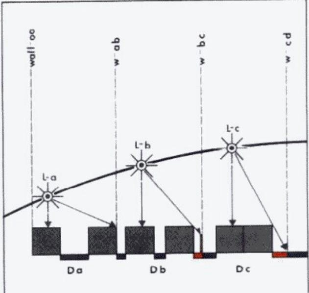
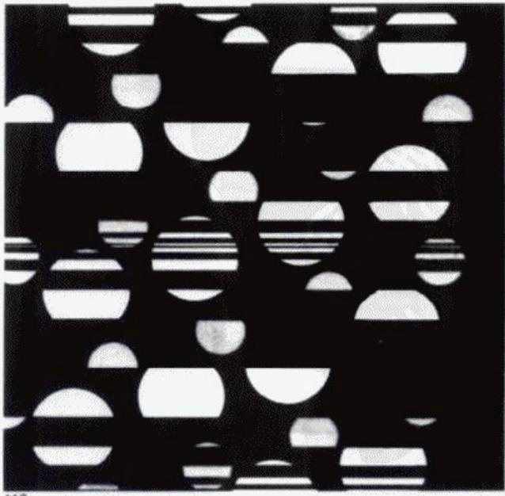
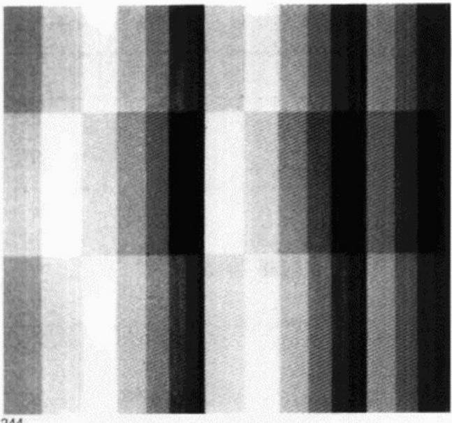
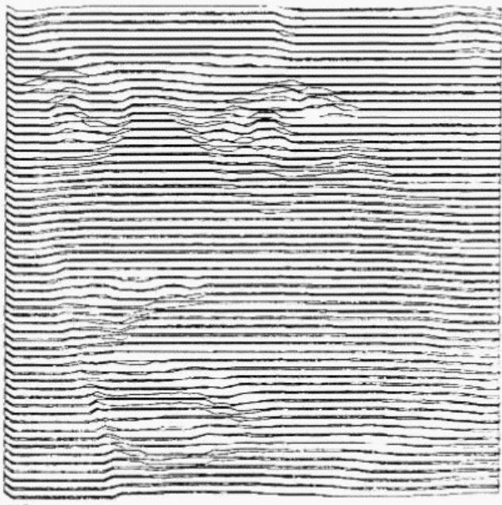
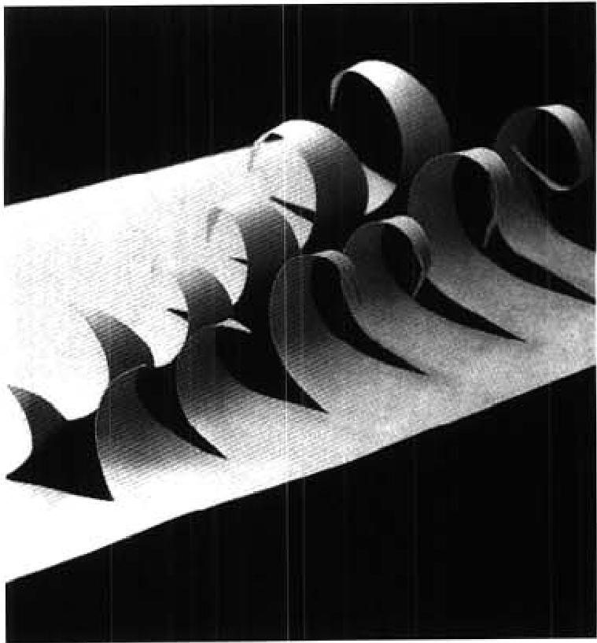
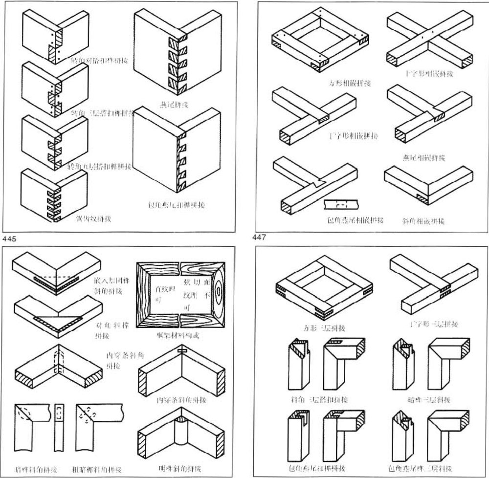
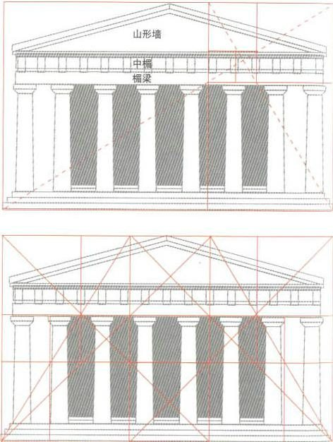
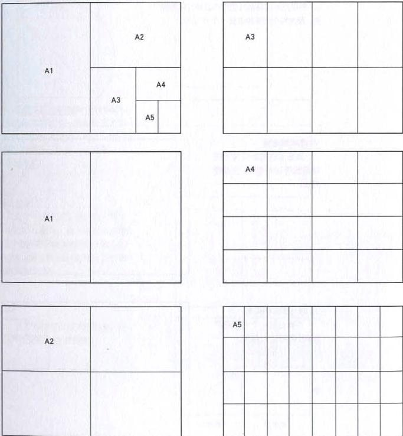
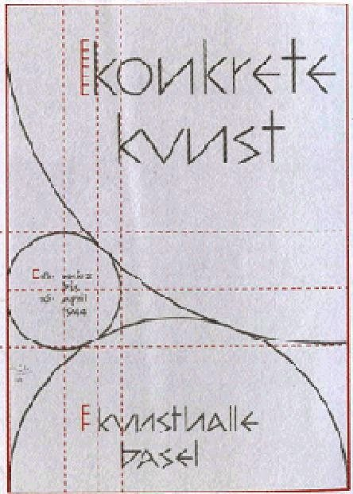
6. Source Bookshelf
Suggested reading order: 《寫給大家看的設計書》 → 《設計元素》 → Naomi Asakura's 《平面構成》 → 《通用設計法則》 (use it as a reference book) → 《設計幾何學》.
Show 34 titles
- 藝術·設計的平面構成 - 藝術·設計的立體構成 - 藝術·設計的紙的構成 - 藝術·設計的光的構成 - [031]平面設計原理 - [033]通用設計法則 - [045]美國視覺設計學院叢書：設計元素（平面設計樣式） - [046]寫給大家看的設計書：實例與創意 - [065]黃金比例 - [077]設計的教室 - [082]設計的方法 - [084]談繪畫構圖 - [085]1000多個圖形元素：獨特的設計元素 - [110]設計中的點線面 - [124]平面設計法則 - [148]設計幾何學：關於比例與構成的研究 - [149]藝術·設計的平面構成（繁體版） - [183]探索幾何：平面視覺構建 - [186]好造型的設計元素 - [236]和諧之美：探索設計中的黃金比例 - [237]分寸設計：發現黃金比例恆久之美 - 設計元素：平面設計樣式（英文原書） - 寫給大家看的設計書（第3版） - 設計元素：平面設計樣式 - 國際平面設計基礎教程：規格設計（FORMAT） - 國際平面設計基礎教程：圖形設計（IMAGE） - 國際平面設計基礎教程：設計思維（THINKING） - 寫給大家看的設計書（第4版） - 平面設計的七大要素 - 綜合造型設計基礎 - 美國視覺設計學院用書：設計元素（平面設計樣式） - 視覺原理 - 設計力：寫給大家的平面設計法則 - 通用設計法則（英文版）7. Study Cues
- Using the same black square, make three compositions that feel like a "point", a "line" and a "plane". Explain how size and arrangement change the way it is read.
- Find a flyer that you think looks "messy". Use C.R.A.P. to point out its problems one by one, then redesign the layout.
- How do gradation and anomaly each create a visual focus? Give one poster example of each.
- Why does a sheet of A4 keep its proportions when folded in half? What are the advantages of this √2 ratio for layout design?
- "Communicate, don't decorate" — pick a piece of work, remove every element that does not serve the message, and compare the before and after.
- What moods do symmetrical and asymmetrical balance each convey? In what kinds of project would you choose each one?
7. Each Book
Each book in the bookshelf is described below. Every title above links to its section.
藝術·設計的平面構成
Author: Naomi Asakura
Scope. This is the planar volume of Asakura's "Basic Form" series, and it deals with form in two dimensions. Painting, printing, wallpaper, textiles and the surfaces of objects all need it, so it covers the foundation shared by every discipline rather than one way of making posters. Point, line, plane, symmetry, division, gradation and rhythm are the main threads of this volume. Volume, paper and light each have a volume of their own, so do not look for material experiments here.
Main ideas
- "Basic" does not mean an introductory step. It is like basic medical science: it pulls out the problems that the specialist fields share and studies them across the board.
- The aim of planar composition is to place forms within a given space, and to train ideas and feeling together through a large number of exercises.
- Points can become lines or planes, and can also be made into ripples and points of light. The thickness, tone and spacing of lines change how they are read.
- If form and colour are simply separated and then put back together, there is little room for creativity; the work of composition is to make the elements relate to each other.
- The laws of variation and unity must be present at the same time: small squares can each have a different shape, yet their direction can still be held together by two sets of parallel lines at right angles.
Methods
- Do element exercises first (arranging points, the thickness and spacing of lines), then relationship exercises (symmetry, equal division, gradation).
- Change only one variable per exercise. For example, keep the same set of shapes and change only the value or only the direction, and watch how rhythm appears.
- When checking for unity, ask: which element is responsible for the whole (direction, spacing, colour or outline)?
- Referring to the points of light, axes of symmetry and gradation layers in the book, make a black-and-white version first, then add one accent colour.
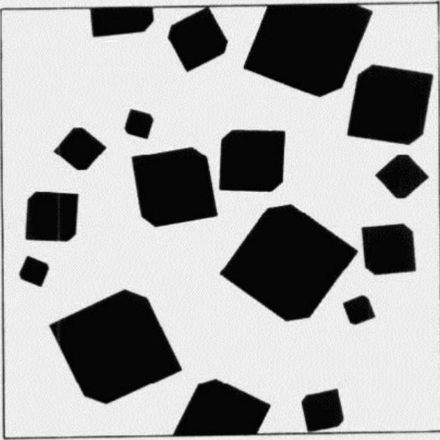
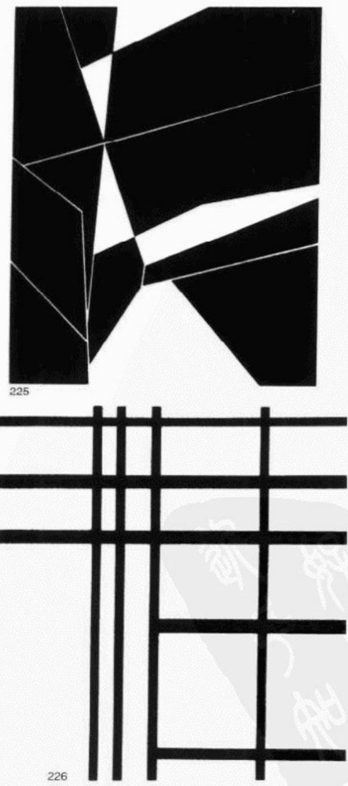
Study cues
- Using the same set of points, create the feeling of a "line" and then of a "plane", and write down which variable you changed.
- Draw four colour planes of equal area. How should you divide them so that the laws of variation and unity are both visible?
藝術·設計的立體構成
Author: Naomi Asakura
Scope. This volume studies only three-dimensional form, and the problems the planar volume did not cover. Its subjects include points of light, linear members, planar members and solid blocks, as well as arrangement, construction and low relief. It is still basic form training, not a manual of building construction or product engineering. Paper folding and physical experiments with light are left to the paper and light volumes.
Main ideas
- The development of three-dimensional form after the war was not just that the works got better; the range of expression got wider. Three-dimensional composition deals with the basic problems within that range.
- The elements of composition include form, colour and structure. This volume focuses on form and the elements that make up form.
- A point can be invisible light: LEDs, end-point lighting, rows of light bulbs, lasers and air currents can all be made into three-dimensional points.
- A line must be seen in terms of its form, its texture and how it is built. Even after abstraction, you should still be able to say what the line is doing in space.
- Materials rewrite form. Firing can be controlled while you watch; magnetism lets metal be attracted, so form no longer depends only on glue and joints.
Methods
- Decide on linear, planar or solid material first, then talk about form. Change the material and the same outline becomes a different exercise.
- When making a linear structure, record three things separately: the form of the line, the texture of the line, and how the lines join.
- Do a small experiment with an invisible point (light, air flow, magnetic force) and write down what force keeps the form standing.
- When you finish, photograph it from three directions. A form that looks good from only one angle is not yet finished as a three-dimensional piece.
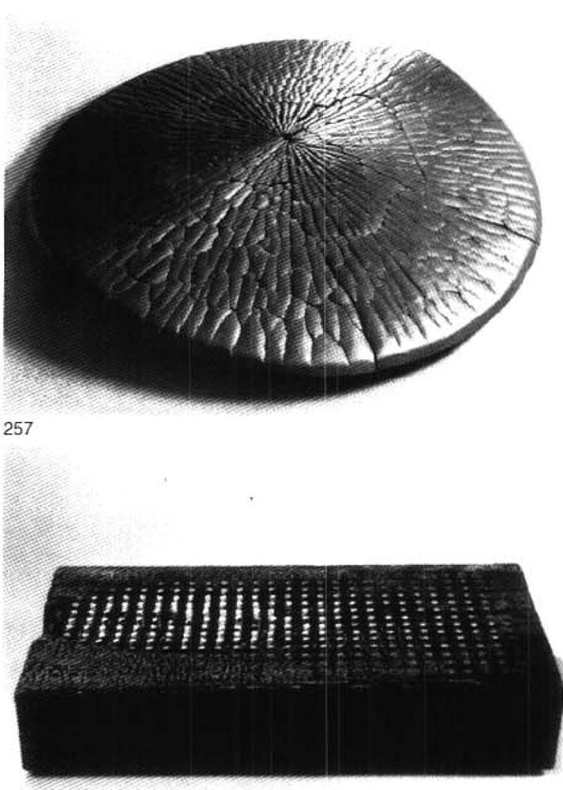
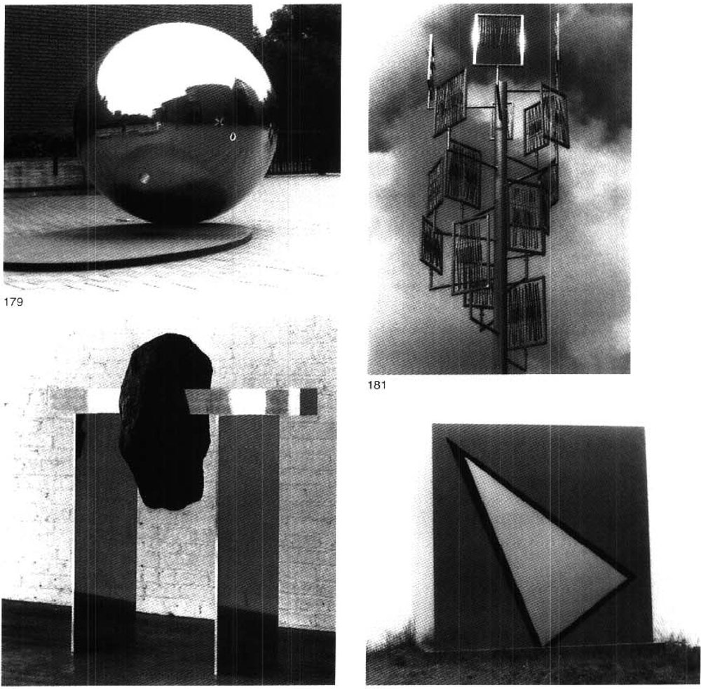
Study cues
- To turn a line from the planar volume into a linear member in this volume, which three decisions must you add?
- Give a small experiment in which "a form is held up by an outside force" (wind, magnetism or light), and say whether the form survives when the force disappears.
藝術·設計的紙的構成
Author: Naomi Asakura
Scope. This volume narrows the material down to paper. The first half covers paper culture: religion, dwellings, tools, toys, and today's printing, packaging and environmental issues. Only the second half is about composition: folding, cutting, relief, polyhedra, and paper in visual communication, lamps and furniture. It is not the three-dimensional volume "done again in paper", because paper's memory, translucency and ability to unfold are things other materials do not have.
Main ideas
- Paper is both a carrier of information and an object. Maps, packaging, ritual banners and paper cuts use different properties of the same thin sheet.
- Folds such as the Miura fold let a large sheet open out along its diagonal; a tea room folded from washi six metres square packs down to only a few centimetres thick.
- Relief does not need thicker material. Pulling, curved folding and hanging lines can all create undulation in a single sheet.
- Polyhedra can be unfolded into cut pieces or joined into linear structures. Cut off the corners of a cube and you get a different set of parts.
- Paper can also move: pull a card open and an apple comes apart; squeeze the head of a polyhedron and its mouth opens. The structure itself is the mechanism.
Methods
- Before you start, choose one property of paper to use: fold memory, translucency, friction, cuttability, or the ability to be glued. Do not use all five at once.
- Make a net (unfolded pattern) for every three-dimensional piece first. Only pieces that can be laid flat and folded back up really use paper rather than board.
- For relief exercises, use one sheet of paper with no extra support, and only cut, fold and pull.
- When making a moving paper piece, write down one action — "pull open", "squeeze" or "turn the page" — and check that the mechanism can be understood at first try.
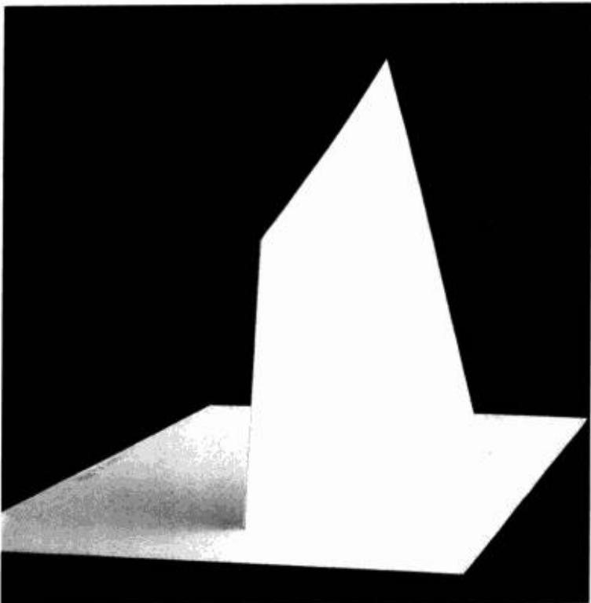
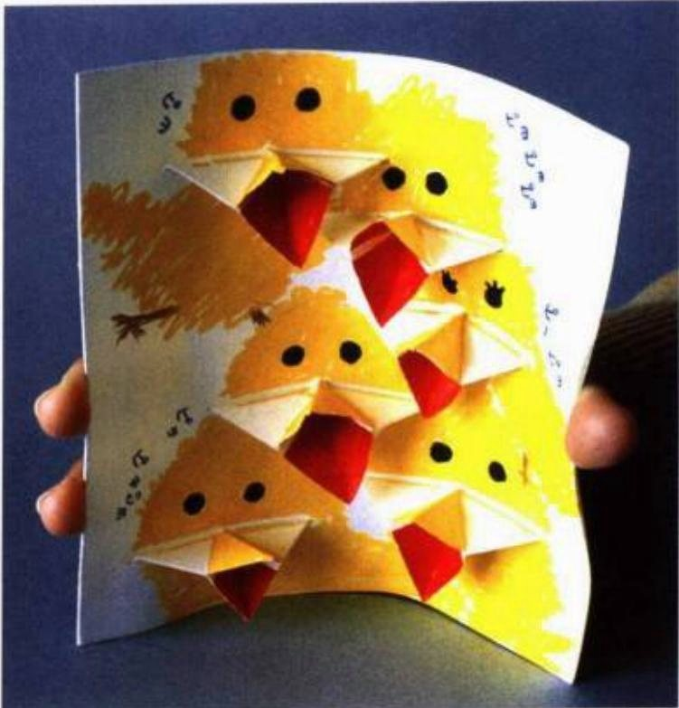
Study cues
- Using one sheet of A4 and only fold lines, make a relief that stands up firmly. Which fold is structural, and which is only decorative?
- Which property of paper do the Miura-fold map and the folded tea room share?
藝術·設計的光的構成
Author: Naomi Asakura
Scope. The fourth volume of the series treats light as a material for form. The content is divided into light art, lighting and light design for cities, and experiments: flash, fluorescent lamps, coloured light, polarised light, black light, lasers, LEDs and neon. The theory sections cover transparency, reflection, refraction, interference and diffraction, as well as afterimages, flicker and light trails. The "points of light" in the three-dimensional volume were only an introduction; the experiments and the properties of light are in this volume.
Main ideas
- Light composition is still basic form training. The name needs to be clear first: it studies the basics of form made with light, not a catalogue of light fittings.
- Natural light, the development of artificial light, and light art since the twentieth century form the historical background to this practice.
- The same lamp has a different job on a shopfront, in a shop window, in an interior, on an exterior wall and in the cityscape. The place comes before the type of lamp.
- The prism is the prototype of the multi-faceted lens. Lenses can be arranged in a parallel series or radiating on three sides.
- "Light + movement" has to deal with afterimages and light trails. When photographing a kinetic sculpture, the number of flashes and the shading decide whether you see the form or its trail.
Methods
- Change only one property of light in each experiment: reflection, refraction or flicker. If you change colour and movement at the same time, you cannot keep a record.
- When photographing light trails, first block any flash that goes straight into the lens, then decide from which diagonal direction the flash hits the subject.
- For coloured-light exercises, record "the colour of the light itself" and "the colour the lit object shows" separately.
- Use a set of prisms or transparent sheets to make both a parallel and a radiating series, and compare how the cut faces change the bands of light.
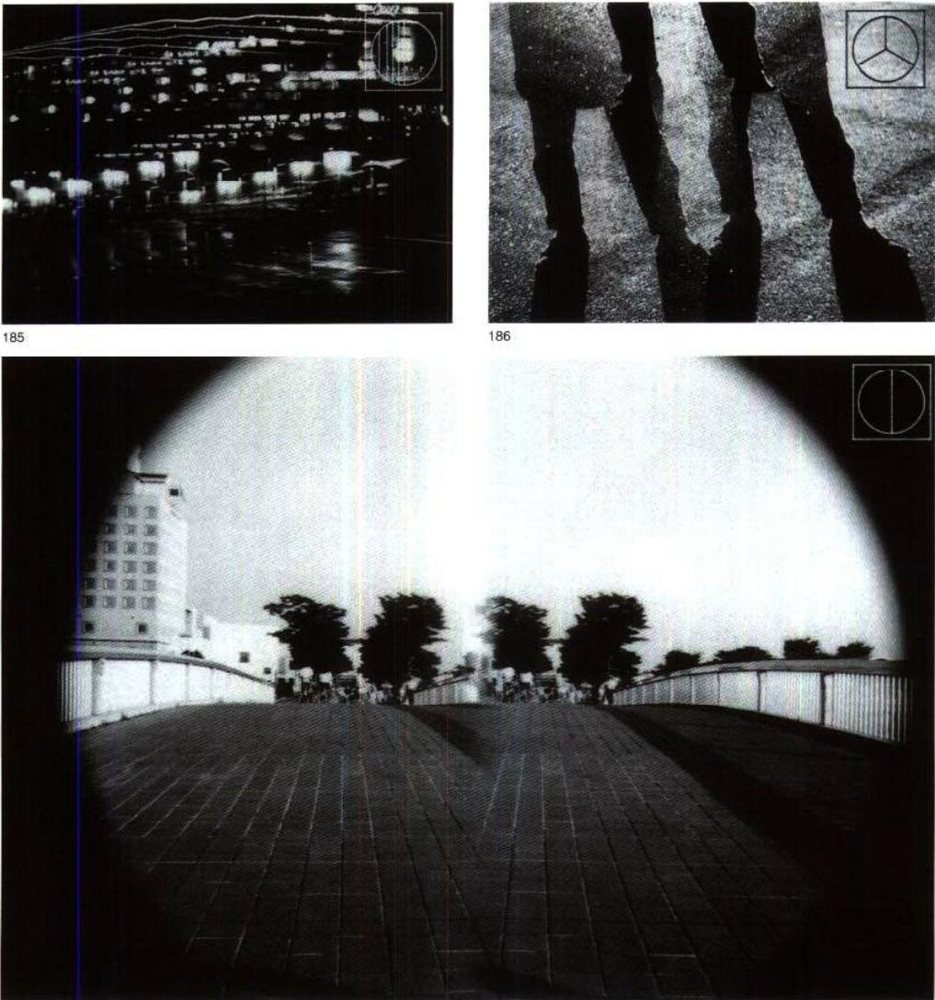
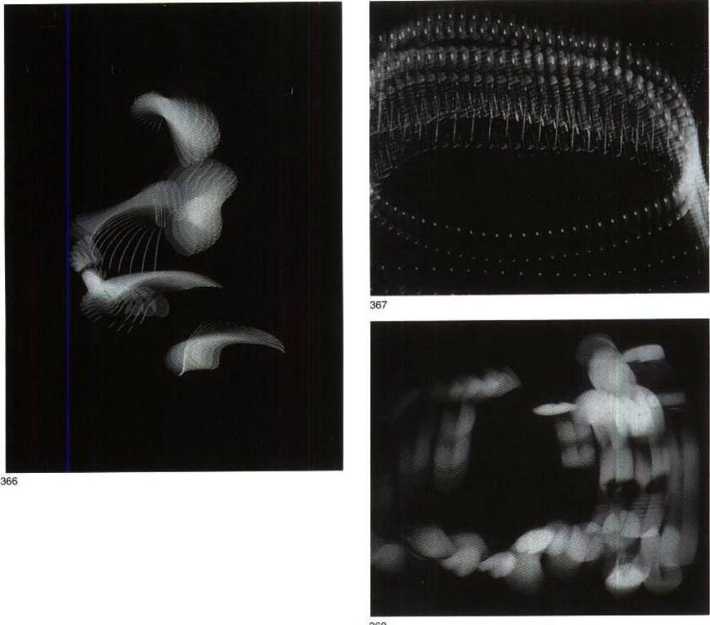
Study cues
- With the points of light in the three-dimensional volume and the light trails in this one, is the viewer looking at "position" or at "time" in each case?
- Why do you add a shade next to the camera when photographing flash trails? If you remove it, what extra appears in the picture?
平面設計原理
Original title: The Elements of Graphic Design: Space, Unity, Page Architecture, and Type
Scope. This book presents graphic design as the work of a communicator: what is on the page has to be understood. The discussion starts with space and figure/ground, moves on to the page as a visible structure, and then to type. It explains its points with publishing standards, magazine spreads and revised advertisements. It does not do point, line and plane form exercises the way Asakura does, nor does it reduce the principles to four slogans.
Main ideas
- The basic aims of page design are recognition and readability. Consistent layout, white space, graphics and repetition are used to guide the eye.
- Space is like air: it is what a design breathes with. Large areas of white space make headlines stand out and give images room to expand.
- Simplicity is not just putting less on the page. Of two equally clear designs, the one that conveys more information is the simpler.
- The design process is a step-by-step filter: first remove content with no value, then, in the fine details of the layout, settle the single most important message.
- Proximity (grouping) is a way to achieve unity. Only when related items sit close together is the page read as a set of groups rather than a pile of parts.
Methods
- Before designing a page, write down "the most important message". Every other item must explain how it serves that message.
- Use white space to build hierarchy: leave a noticeable distance between the headline area, the image area and the text area.
- Check proximity: circle related labels and content as groups. The space between groups must be looser than the space within them.
- When revising, delete first, then adjust letter-spacing and leading. Fine-tuning comes after filtering.
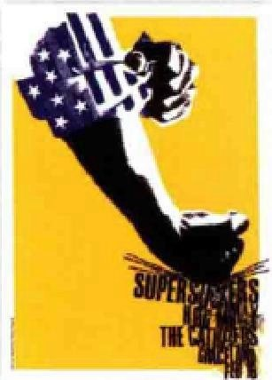
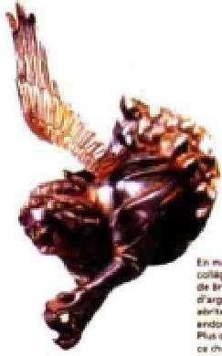
Study cues
- Take a one-page flyer and circle the related items. Is the distance between groups greater than the distance within them?
- Compare two posters using the book's definition: which is simpler? Is your reason the amount of information, or just that it has fewer elements?
通用設計法則
Original title: Universal Principles of Design
Authors: William Lidwell (with Kritina Holden and Jill Butler)
Scope. This is a handbook you look up principle by principle, not a workbook for a composition course. Each principle comes from research and explains how people perceive, learn and use designs. The Chinese edition has two tables of contents, alphabetical and by category, running from 80/20, accessibility, affordance and alignment to archetypes. The English edition of the same name is the original text of the same principles and is useful for checking the English names; use this volume to read the explanations and examples.
Main ideas
- Principles are not taste. The book's position is that these principles are backed by research and can be used to explain "why some designs are remembered".
- Principles such as the cathedral effect and the biophilia effect link ceiling height and natural scenery with people's states of mind.
- Affordance, alignment, consistency and legibility deal with use, not only with whether the picture looks good.
- Propositional density looks at how many layers of shape, meaning and association can be stacked. It is used to judge whether a work can resonate with people.
- The rule of thirds does not always apply. When the subject is strong, the space around it already reinforces it; forcing it onto a third point can take that strength away.
Methods
- Before making a decision, classify the problem: is it about perception, learning or use? Then look up only the principles in that category.
- Each time you apply a principle, write down "what it predicts the audience will do". Check afterwards; if the prediction fails, change the principle, not the slogan.
- Apply alignment and proximity to grouping information first, before thinking about style.
- When you see a popular composition (such as the rule of thirds), first ask whether the subject is already strong enough. If it is, protect it with white space.
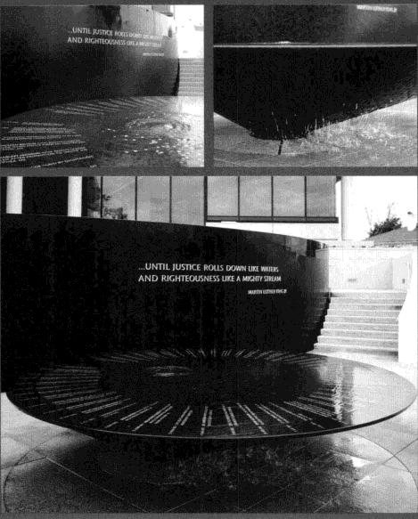
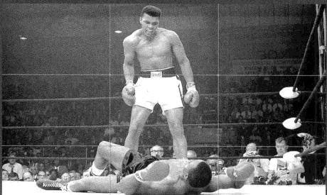
Study cues
- Choose two principles for your project, one about "whether people can understand it" and one about "whether people can use it". Do they conflict?
- Find a poster whose subject is already very large. If you changed it to the rule of thirds, would the surrounding space still help the subject?
美國視覺設計學院叢書：設計元素（平面設計樣式）
Original title: Design Elements: A Graphic Style Manual
Scope. This is the series edition of the Chinese translation of 《設計元素：平面設計樣式》. Its core is twenty rules of good design, followed by sections on form, space, colour, type and images. It is a style manual: it explains the rules through work, for reference and comparison. The same book also exists in a "good form" packaging, as the English original, and as two other Chinese scans; for this entry, use the rule text of the series translation, and for the plate discussions compare contrast and collage.
Main ideas
- You must have a concept first. Without information, a story or a point of view, beauty is just an empty shell.
- Use one visual language. If one element does not fit with the rest, the whole message is weakened.
- Limit type families to two, three at most. When the typeface changes, readers assume the function or meaning has changed.
- First direct attention to the most important information, then use shapes, pictures, type or colour to lead the eye to the secondary parts.
- Choose colour for its meaning, not by industry convention. Negative space should be designed, not left over as holes to fill.
Methods
- Before finalising, do a "one voice" check: are the shapes, weights, layout and concept all saying the same thing?
- Keep only one type family, plus sizes and italics. If you add a second family, write down the one function it is responsible for.
- Take a first look from thirty paces away and say the first word you read. If it is not the main headline, redo the hierarchy.
- When making collage, keep two kinds of material separate: hand-scanned textures, and image treatments such as transparency, silhouette, multiple exposure and blur.
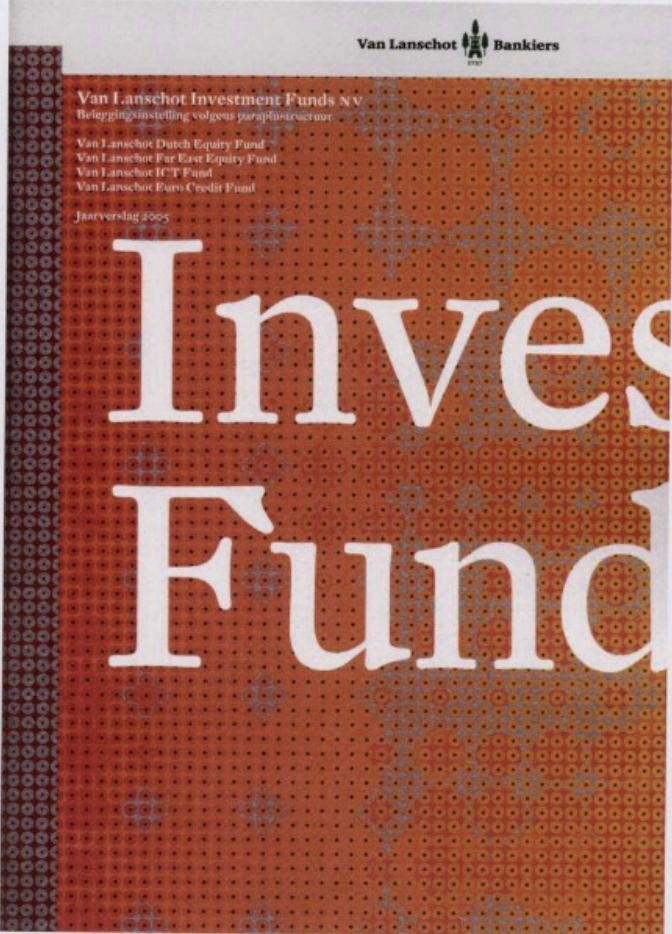
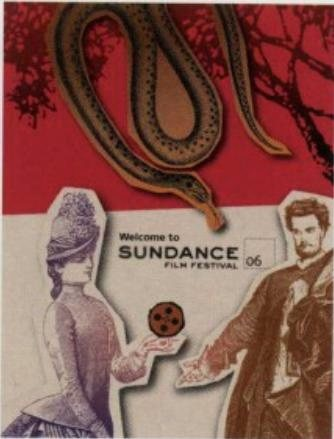
Study cues
- Use four of the twenty rules to assess one of your own projects: concept, one visual language, number of typefaces, negative space.
- Cut the type families on a poster down to two. What function was the one you removed responsible for?
寫給大家看的設計書：實例與創意
Original title: Robin Williams Design Workshop
Authors: Robin Williams, John Tollett
Scope. This is the hands-on sequel to 《寫給大家看的設計書》, not a first explanation of the principles. Principles, type, colour, printing and file formats are set out as quizzes, followed by projects such as brochures, websites, forms, business cards and logos. The 3rd and 4th editions of 《寫給大家看的設計書》 explain contrast, repetition, alignment and proximity; this book assumes you already know them, and then pushes you to produce a deliverable version within a schedule and a budget.
Main ideas
- Having a layout, copy and photos is still not enough. If the apostrophes, quotation marks or spaces after full stops are wrong, the work is not at the level you think.
- Typographic details (accents, full stops inside or outside brackets, the apostrophe in "its", hyphens) are the designer's job and cannot be passed on to the typesetter.
- You must be able to tell type categories apart: slab serif, sans serif, oldstyle, modern, decorative, script. Use the wrong category and the tone is wrong.
- Paragraph hierarchy depends on a visible technique. You should be able to point out the difference between the left and right paragraphs.
- Under tight deadlines and tight budgets, typesetting produces many versions. The hard part of creativity is narrowing down, not making one more.
Methods
- Start with the self-test at the front of the book: principles, typesetting, colour, printing, file formats, type. If you cannot answer a section, do not start the project from that section.
- For each project, make three versions in a set time, then keep only one, and write down why you dropped the other two.
- Before handing in, check specifically for five kinds of error: apostrophes, quotation marks, hyphens, spaces after full stops, punctuation after italics.
- Set up an ideas folder, and store usable directions and rejected directions separately.
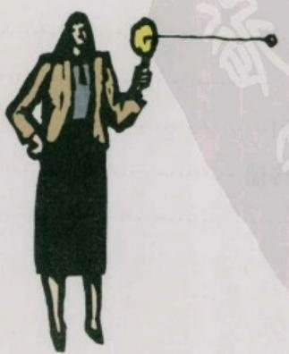
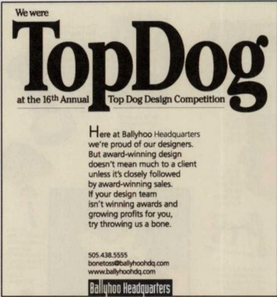
Study cues
- Find five typographic errors in a passage of English (apostrophes, spaces, hyphens, quotation marks, punctuation position).
- After making three versions of the same business card project, what criterion do you use to keep one?
黃金比例
Original title: Geometry of Design: Studies in Proportion and Composition
Author: Kimberly Elam
Scope. This volume is a Chinese translation of Kimberly Elam's study of proportion, with the title focused on "the golden ratio". It moves from people's preference for certain rectangles to nature, Greek sculpture, the Vitruvian figure, Renaissance painting, faces and architecture, and shows how to draw the golden rectangle, spiral, triangle and ellipse. 《設計幾何學》 follows the same research through to layout analysis; 《分寸設計》 is the second edition, with more recent case studies. 《和諧之美》 is a collection of contemporary logo cases, not the history and drawing methods of this volume.
Main ideas
- Gustav Fechner measured a large number of rectangular objects, and repeated experiments after Charles Lalo also showed that people prefer rectangles close to 1:1.618.
- The golden section can bring parts together into a whole while letting each part keep its own character. The spiral of a shell only approaches this ratio; it is not an exact mathematical match.
- The numbers of clockwise and anticlockwise spirals on pine cones and sunflowers are neighbouring Fibonacci numbers. The ratio of the line segments in a pentagon and a pentagram is also this ratio.
- Vitruvius placed the human body in a square and in a circle centred on the navel: the groin divides the body in two, and the navel sits at the golden section point. The Doryphoros and the statue of Zeus both follow this system.
- The body proportions of Leonardo da Vinci and Albrecht Dürer almost coincide, but their faces differ. Dürer placed the features lower and made the forehead higher, reflecting the facial ideals of his time.
Methods
- When analysing a picture, first draw the enclosing golden rectangle, then draw the secondary rectangles that share its diagonal. Do not just paste a spiral on top as decoration.
- In figure or portrait work, check body proportions and facial proportions separately. They do not have to share the same ideal.
- Use neighbouring Fibonacci numbers (5:8, 8:13, 13:21) to divide the picture, and write down what content each cut passes through.
- When comparing with examples from nature, note whether they "approach" or "match". The shell in the book approaches.
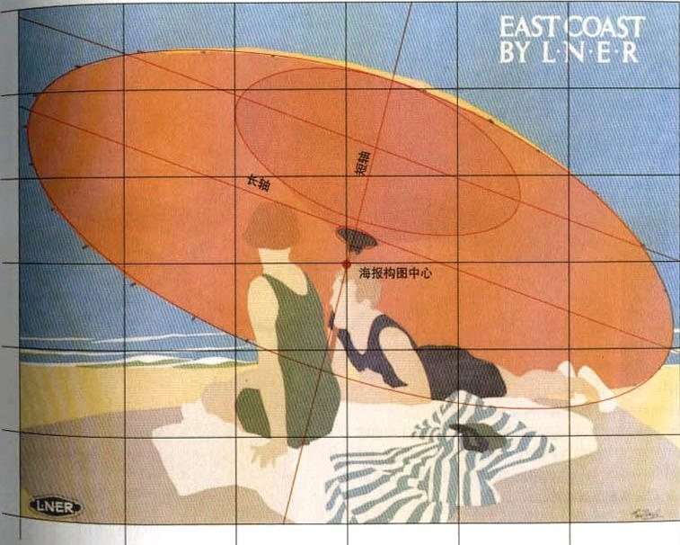
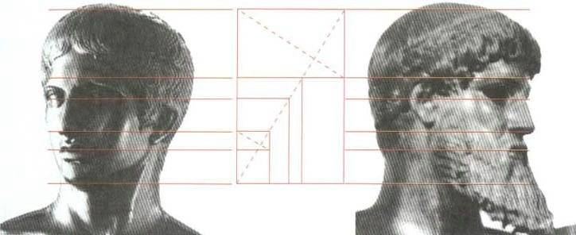
Study cues
- Use a golden rectangle to analyse a front-facing portrait: on which division line do the eyes, nose and mouth each fall?
- Why does the book say the nautilus "approaches" the golden spiral rather than equalling it?
設計的教室
Scope. This is a workbook. Chapter 1 uses a pencil, an eraser, a pen and a paper clip to show that every position must have a reason you can put into words. Only after that does it move on to composing with basic shapes, colour and real projects. It trains the logic of graphic design; it is not an encyclopaedia of principles, nor the mathematics of the golden ratio.
Main ideas
- Some positions in a picture can be named: the two ends, the centre, left-aligned, right-aligned, centred, equally spaced. Only positions you can name can carry your intention.
- Design can express feelings that words cannot, but when checking your intention, you should still try to restate it in words.
- Each time you add an object, the reasons for the old objects' positions change. A pen placed later gives the eraser placed earlier a new reference point.
- A logical design is one where objects serve as reasons for each other, and those reasons do not contradict each other.
- Colour needs a reason too. If the headline colour does not stand out in the palette, go back to the palette and add a colour, rather than painting it black afterwards.
Methods
- Arrange four items of stationery. Each time you place one, say aloud what it aligns with and which spacing it equals. If you cannot say, place it again.
- When you finish, hide the names of the objects and ask someone else to restate your rules by looking only at the positions. If they cannot, the rules do not exist.
- When building a palette, count the headline colour as part of the same palette. Do not decide the headline on its own before the whole palette is done.
- Try a set of colours whose CMYK values add up to the same total, and check whether they fall into similar tones.
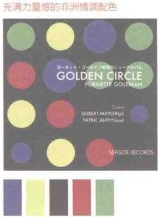
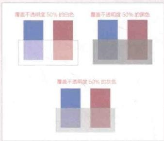
Study cues
- Arrange four items of stationery on a table so that the horizontal position of each can be described as "aligned" or "equally spaced".
- Your headline is black and everything else is a set of grey-blues. Following this book's approach, at what step should the black have been decided?
設計的方法
Original title: The Design Method: A Philosophy and Process for Functional Visual Communication
Scope. This book is about how a studio turns a problem into a design, using projects by the author's studio smashLAB as examples. The first part takes apart eleven myths about creative work; only the second part sets out the four phases of the method: discovery, planning, creative and application. It suits visual communication problems that have not yet been clearly defined. A small poster may not need the whole process, but the principles still apply. It does not teach point, line and plane, nor does it replace the composition training of 《設計的教室》.
Main ideas
- The myths include: design is a sibling of art; creativity is something ready-made; being different is good; you must wait for inspiration; talent decides everything.
- Another group of myths concerns ways of working: treating design as a lifestyle; treating self-expression as the goal; believing designers are smarter than clients; believing the designer is the audience; believing awards equal value; believing creativity should not be bound by rules.
- The phases of the method are discovery, planning, creative and application. Each phase must leave documents you can show the client.
- The way to understand users is to spend money and use the service yourself, experiencing it as a user does, rather than imagining them in a meeting room.
- Ideas need to converge. After working on an idea for a long time, often only the last twenty minutes of brainstorming are truly useful.
Methods
- When starting a project, first write a list of myths: the three you are most likely to fall into this time. Pin it next to the brief.
- In the discovery phase, collect only problems and constraints; user personas and content tools come in the planning phase. Do not produce a style on day one.
- Go through the client's service yourself (queue, order, open the packaging), and use the experience to rewrite the adjectives in the brief.
- Put a time limit on brainstorming. Stop when time is up, and turn the sentences from the last stretch into actionable directions.
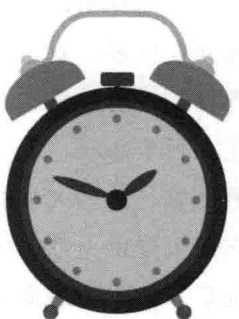
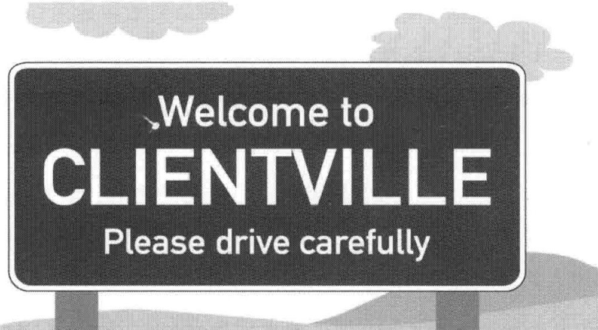
Study cues
- From the eleven myths, choose two you have fallen into recently, and write one example from your own work for each.
- For your next project, what do you plan to collect in "discovery"? On which day do you plan to start drawing in "creative"?
談繪畫構圖
Scope. This is a textbook on composition in painting. It explains the picture through illustrated examples and is not a layout book for graphic design. It starts with the principles of unity in variety, balance, and density, then covers arrangement, line, shape, eye level, black-white-grey, the picture frame and colour, and ends with setting off and contrast. Design students can use it to understand "weight" and "viewpoint", but should not treat its figure-drawing methods as a poster grid.
Main ideas
- Balance is a felt balance, not left-right symmetry. Curved and straight, thick and thin, long and short lines should not be equal in number; one kind should lead.
- The areas of black, white and grey should not be equal. Once main and secondary are separated, the picture stops looking dull. Blocks of tone can break through outlines and connect with each other, like knocking through a partition wall.
- Warm and cool, strong and weak, dense and pale also have weight. Half red and half yellow is a symmetry of colour and is just as rigid.
- Eye level changes a figure's status. Seen from above, a figure looks small however large it is drawn; with the eye level between chest and head, the viewer feels present in the scene.
- Setting off can also be used in reverse: on one side black sets off white, on the other white sets off black, so two groups of figures are each brought out and also echo each other.
Methods
- First make an area sketch with three blocks of black, white and grey, check that they are not three equal parts, then add the line drawing.
- Set a rule for line exercises that "curved or straight must lead": if there are many curves, keep straight lines few and thick, or the reverse. Count them; if the numbers are equal, redraw.
- Do the same subject at three eye levels: high, middle and low. Write down whether the viewer is looking down, straight across or up.
- Use one block of black to connect dark areas that were separate (hair, clothes, shadows), and see whether the picture flows better as a result.
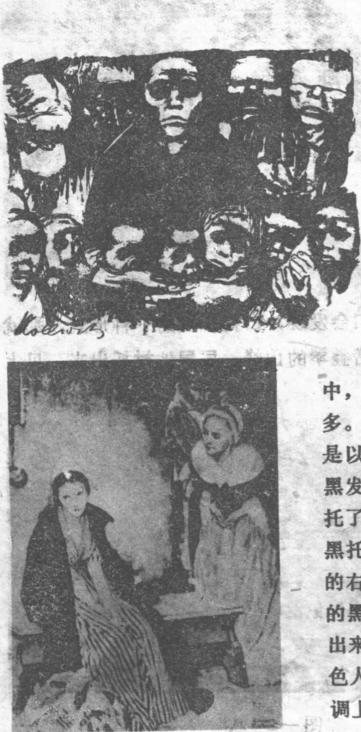
Study cues
- Draw a balance of three lines: why does it fail when curved and straight lines are equal in number?
- Place the same person once at a high eye level and once at a middle eye level. Which is better for showing "looking down on him"?
1000多個圖形元素：獨特的設計元素
Original title: 1000 Graphic Elements: Special Details for Distinctive Designs
Scope. This is a specimen collection of graphic elements. It gathers commercial and artistic graphics from studios around the world, listed by work number, and touches on materials, printing and special finishes. The introduction sums up the trend of the time in one line: restraint first, with materials and special techniques used with intent. It is for browsing and comparison. It gives no composition steps and cannot replace the rules of 《設計元素》 or Asakura's exercises.
Main ideas
- The power of graphic elements comes from layered inks, dynamic composition and controlled colour, not from piles of post-production effects.
- With fewer eye-catching surface finishes, ink and graphics have to carry the expression. Bold graphics can make up for the finishes that were dropped.
- There are many exceptions, but the story is clear: restraint, together with strategic use of materials, is driving how graphic elements are used.
- Read the book by browsing studios and techniques by number, not by following chapters in textbook order.
- The same element (line, dot, block of colour, letter) appears again and again in work from different countries. When comparing, look at the materials and printing, not only at whether the outlines look alike.
Methods
- Each time you copy down an element, also note the studio, the material and the printing method. A scrapbook that stores only shapes leaves you not knowing how they were printed when you come to use them.
- Subtract before you imitate: remove one special finish and see whether the graphic still stands up on its own.
- Use this book to find examples of "restraint", and other books to find rules. Do not mix the two into one notebook.
- When collecting, sort by task (emphasis, separation, packaging surface, logo detail), not by how attractive it is.
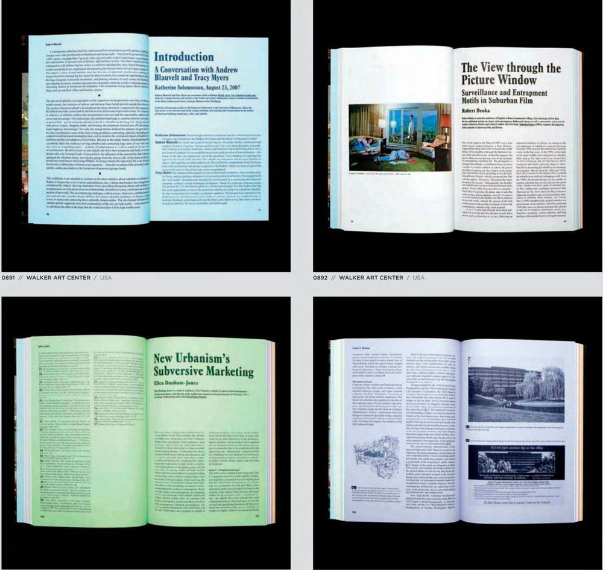
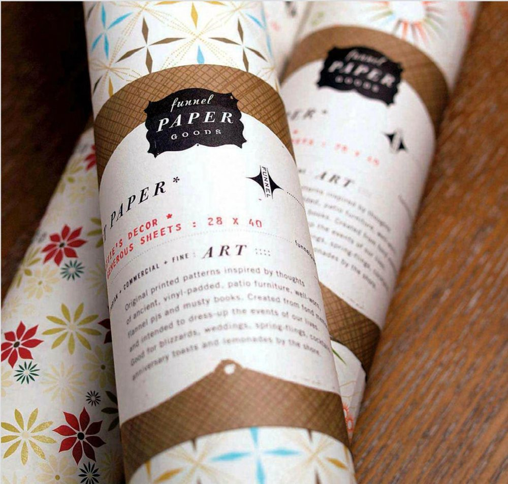
Study cues
- Choose an element from the book and write down one material or printing method it may depend on. If you remove that finish, what is left of the element?
- The introduction says "restraint first". Find a spread you think is restrained, and say whether what is held back is colour, finishing or the number of graphics.
設計中的點線面
Author: Wang Shaoqiang
Scope. This volume uses contemporary graphic projects to show how point, line and plane become a language of communication. The preface puts geometry back into the context of modern design: the Ulm School of Design, the golden ratio, Le Corbusier's Modulor, Josef Albers's space and surface, and the precise graphics of Sol LeWitt and Enzo Mari. The main text is a portfolio: logos, posters, calendars, records, wayfinding and identity design. It shows how things are used and does not replace Asakura's step-by-step exercises.
Main ideas
- Geometric graphics are a tool of communication, not improvised brushwork. Minimalism and precision require structure worked out in advance.
- The book treats the golden ratio as a link between mathematics, the human body and nature, to explain why graphics keep returning to this number.
- Computer images are made of pixels, so designers already work with a mathematical grid every day.
- In projects, point, line and plane are often a system: a set of logos must still be recognisable when its graphics, colours and sizes change.
- Graphics can also be used to create "an illusion that people believe". A calendar project moves descriptions out of their original context and makes people feel nostalgic.
Methods
- Classify each case with one of three words: is it mainly using point, line or plane? Each case gets only one main word.
- If the work is a system, find the parts that do not change (proportions, strokes, modules) and the parts that may change (colour, size, background texture).
- Link one historical name from the preface (Le Corbusier, Albers or LeWitt) to a contemporary case in the book, and write down the kind of precision they share.
- When making your own logo, set the geometric rules first, then draw. If you cannot write the rules down, you have not yet left "improvisation" behind.
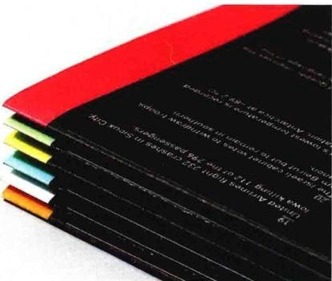
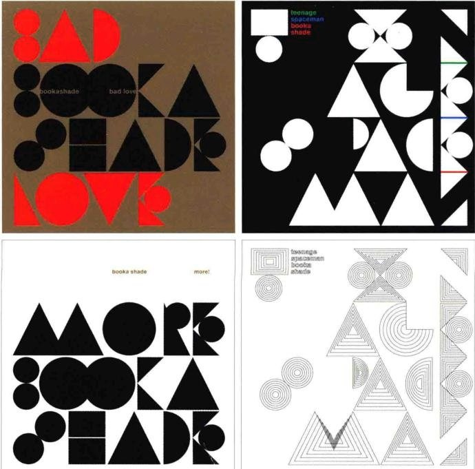
Study cues
- Choose an identity design from the book and list which part must still stay the same four years later.
- What makes the illusion in the "Prophecy" calendar seem real: the geometry, the copy, or the two working together?
平面設計法則
Original title: The Essential Principles of Graphic Design
Scope. This is an introductory reader divided into "basic rules" and "rules of the creative process". In the basic part, different authors write on type, colour, layout and style; the process part covers market research, ethnography, focus groups, eye tracking and online testing. It offers no single all-purpose rule. Unlike Lidwell's handbook, which names principles after research, this book is more like a map of the industry: first get to know the paths graphic design can take, then the research to do before making decisions.
Main ideas
- Graphic design needs both creativity and logic: it conveys thinking through images, and it must also organise visual information and knowledge.
- Colour, type, layout and style all need to be learned, and in the end they must combine into one method. No single element can guarantee success on its own.
- Passion and the power to move people cannot be taught, yet they are why work is remembered. The parts that can be taught still need long practice.
- Typography is compared to writing: first master basic sentences, then aim for liveliness, and only then earn the right to break the rules.
- Research in the process (ethnography, focus groups, eye tracking) is used to reduce the mystery of "it feels right", not to replace judgement.
Methods
- When reading the basic rules, take notes in four columns: type, colour, layout, style. In each column, copy only one rule you are willing to follow in your next project.
- For the process, write the research question first, then choose the method. Eye tracking answers "where do people look first", not "is this line of copy right".
- Use a real client brief to practise saying no: write down one standard you refuse to lower, and the work you plan to use to persuade the client.
- Read this book's process alongside the four phases of 《設計的方法》, and mark which steps are the same thing under different names.
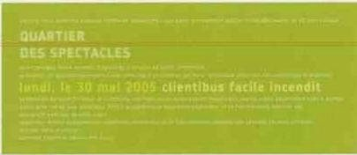
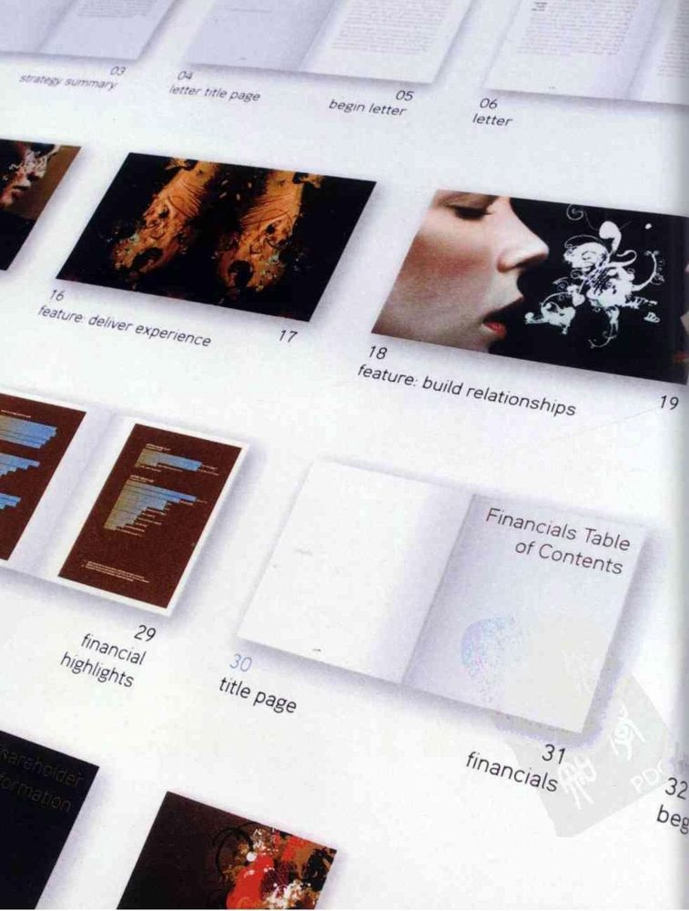
Study cues
- Of the four basic rules, which is currently your weakest? What kind of exercise does this book suggest to strengthen it?
- What questions can eye tracking and ethnographic interviews each answer, and what can they not answer?
設計幾何學：關於比例與構成的研究
Original title: Geometry of Design: Studies in Proportion and Composition
Author: Kimberly Elam
Scope. This volume, like 《黃金比例》, belongs to Elam's study of proportion, and its subtitle states that it is about "proportion and composition". The first half again covers preference, nature, the human body, faces and architecture; read on and this volume applies the same geometry to design composition: arcs, rectangles and root ratios must explain the size and position of every element. 《分寸設計》 is the second edition and adds reversed rectangles and a group of modern works. The focus of this volume is compositional analysis itself.
Main ideas
- The golden section appears both in made objects and in biological growth. Biological spirals approach it; they do not equal 1:1.618 exactly at every step.
- The rectangle experiments of Fechner and Lalo are the psychological basis for "people prefer certain proportions"; they are not mysticism.
- Neighbouring Fibonacci numbers explain the double spirals of pine cones and sunflowers. The ratio of the side lengths of the triangles inside a pentagon is also the golden ratio.
- Every size, placement and position in a composition needs a reason. The rhythm of concentric arcs can correspond to the mathematical structures in music.
- The √2 rectangle has its own method of circle composition. A centred X shape can govern the whole picture; a name and a rectangle can share the 2:3:4 progression.
Methods
- When analysing a work, first choose one kind of rectangle (golden or √2), then align the elements to its diagonals, circle centres or divisions.
- Write a proportional reason next to each element. Remove any decoration you cannot give a reason for from the composition sketch.
- Use whole-number ratios such as 2:3:4 for a set of type sizes or blocks, and check whether they are truly proportional and not just "one big, one small".
- When reading it alongside 《黃金比例》, split your notes into "how to draw a proportion" and "how to use proportion to explain an existing design".
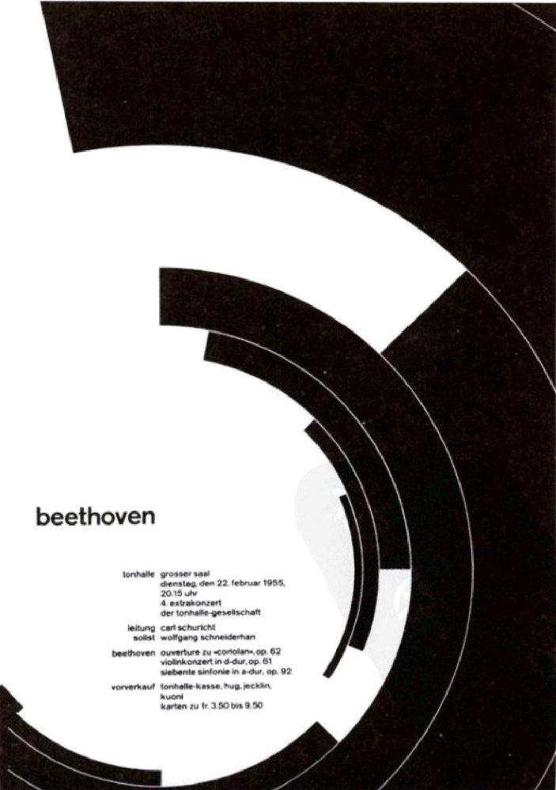
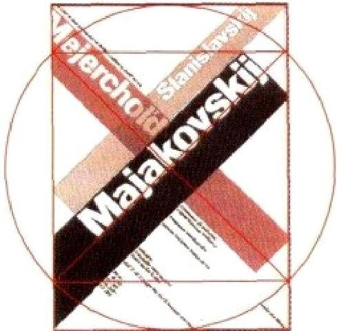
Study cues
- Assign 2:3:4 to three type sizes on a poster. What kind of information does each size control?
- Which would you use for paper that "keeps its proportions when folded in half": the golden rectangle or the √2 rectangle? Why?
藝術·設計的平面構成（繁體版）
Author: Naomi Asakura
Scope. This is the traditional Chinese edition of the planar composition volume; its content is the same course as the simplified Chinese 《藝術·設計的平面構成》. The wording differs: this edition uses Japanese-style terms such as zaoxing written with the character for "shape", ercixuan ("second dimension"), yongju ("implements") and dongshi ("dynamic force"), where the simplified edition uses zaoxing written with the character for "model", erwei ("two-dimensional"), gongju ("tools") and dongtai ("dynamics"). Use this volume to check translated terms and figure order; there is no need to learn the theory again. Volume, paper and light are still not in this book.
Main ideas
- The purpose of planar composition is to create interesting forms and arrange them in a given space. Learn a good range of techniques, then put them into practice on paper.
- We live in three dimensions, yet a great deal of formal expression happens in two: printing, wallpaper, textiles, patterns on objects, and the surfaces of three-dimensional things.
- "Basic form" is not an entry level like a first-grade belt in judo; it is a specialist discipline that every field of form-making needs and that goes beyond the introductory.
- Point, line and plane are still the elements of form. Moiré patterns, points of light and line thickness are all in this volume's chapter on elements.
- The explanation of the laws of variation and unity is the same as in the simplified edition: small squares can differ in shape, while groups of parallel lines at right angles unify the direction.
Methods
- When reading the figures, translate the traditional edition's captions back into the terms you use from the simplified edition, and make a one-page comparison (the two ways of writing zaoxing, dongshi/dongtai, lüdong/yunlü).
- Do the exercises by element as before: lines of light, parallel lines that differ in solid and broken strokes, swinging light trails. Keep only one kind of light or one kind of line per sheet.
- In unity exercises, allow the shapes to differ, but do not allow more than one system of direction.
- State the edition when citing page numbers. The figure order of the two editions is not quite the same; in the traditional edition, the light-trail figures come on earlier pages.
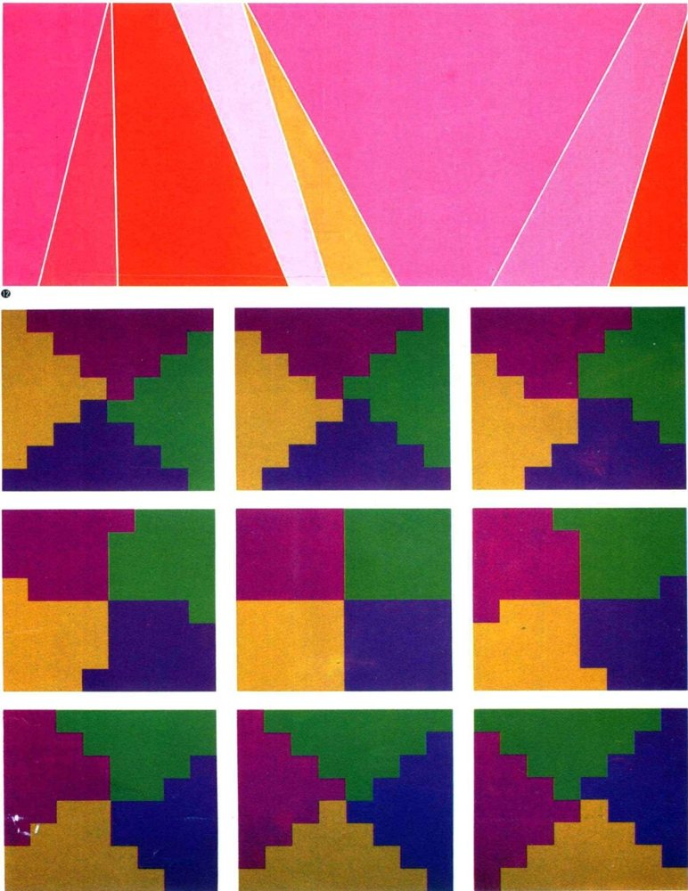
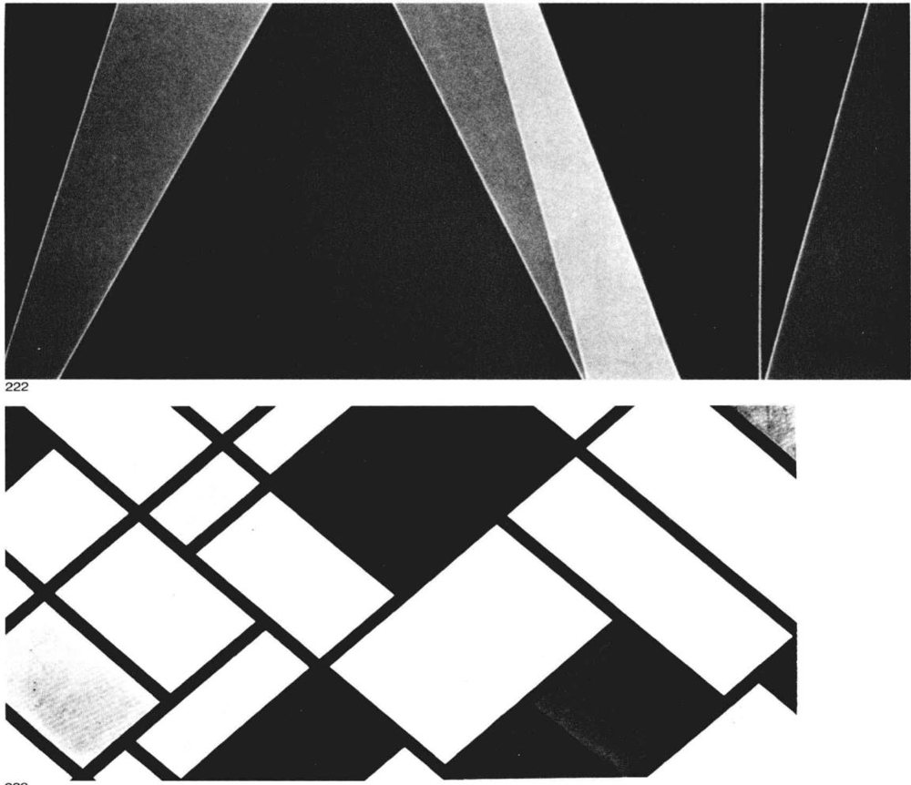
Study cues
- List five translated terms you tend to confuse, and write down which word the simplified and traditional editions each use.
- Make an exercise with "swinging lines (light trails)". What kind of time separates it from a composition of still parallel lines?
探索幾何：平面視覺構建
Scope. This is a collection of projects using geometric graphics, covering posters, logos, branding and packaging. A Swiss-style poster on a twelve-column grid, the bowl and noodles of a ramen shop, and the striped letters of a shelter are all finished visual identities. It lets you see how geometry enters a brand. It does not teach how to construct the golden section, nor does it replace the proportion analysis in Elam's books.
Main ideas
- The book sees geometry as order, symmetry and limits. It quotes the view that these are the highest forms of beauty. Practice can begin by changing one geometric element in a small way.
- A celebration poster uses a twelve-column vertical grid together with highly saturated geometric patterns, an example of grid and graphics working together.
- A logo can use the geometry of concrete objects (a bowl, noodles) while also carrying the gathering and nourishment behind a meal.
- Stripes, letters and light can combine into a system that can be cropped and extended. The shelter's yellow stripes must be able to continue horizontally or vertically.
- Geometry on a portrait can be a mask: in a moving image, the portrait and information appear only after the mask fades away. Here geometry handles the first glance, not the whole content.
Methods
- Copy only one geometric decision from each case: the number of grid columns, the basic shape, or the direction in which stripes extend.
- When making a logo, write down the object first (bowl, house, letter), then reduce it to a repeatable geometry. Do not start from an abstract circle.
- Check whether the system can be cropped: cut off half, and see whether the rest is still recognisable as the brand.
- If you use geometry to cover a photo, design a second layer of information for "after it moves away"; otherwise the mask is only decoration.
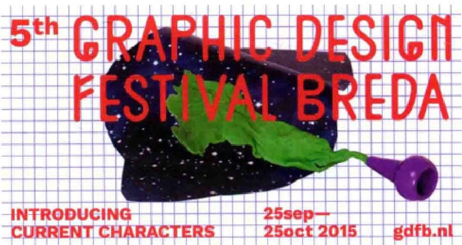
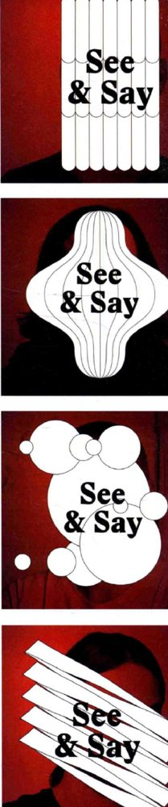
Study cues
- Choose a case and write down its grid or basic shape. What is this geometry communicating, beyond just "looking good"?
- Design a striped logo that can be cropped vertically. After cutting off a third, what identifying feature is left?
好造型的設計元素
Original title: Design Elements: Understanding the Rules and Knowing When to Break Them
Scope. This volume turns the twenty rules of 《設計元素》 into an introductory course for graphic designers, in this order: what graphic design is, the twenty rules, form and space, and only then colour, type, images and integration. The series edition and the two other Chinese scans are the same style manual and suit looking up work by rule; this volume suits reading from the start, because the rules are written as continuous lessons and it stresses how form moves in space. Use the English original to check the original wording.
Main ideas
- The rules are a starting point. Later the book breaks them, but you must know the consequences before you break them.
- Without a concept there is no graphic design. Communication comes before decoration; any effect that does not help the meaning is superfluous.
- Design should make the audience understand, not only the designer. Negative space is form just as much as positive shape is.
- Less is there to lead the eye to where it should look. Complexity and richness are not the same thing.
- To define a form, look at how it moves in space and how it compares with other forms. This is the most abstract level of communication.
Methods
- Make a small poster following the twenty rules in order. After every five rules, stop and remove one element that does not convey meaning.
- Do form exercises without photos: use only shapes and spacing, so that people can see hierarchy and movement.
- Use gradations of value and saturation to give grid-based text a rhythm, rather than relying only on jumps in type size.
- When comparing with the series edition, set the examples for the same rule side by side. Take the explanations from this volume and the range of work from the style manual.
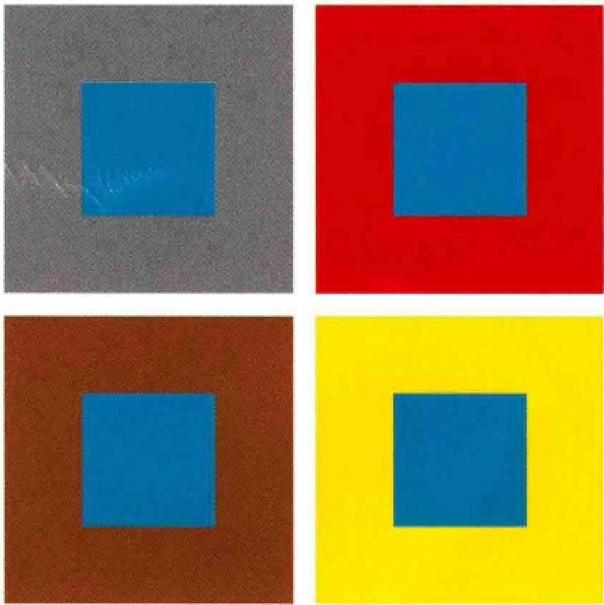
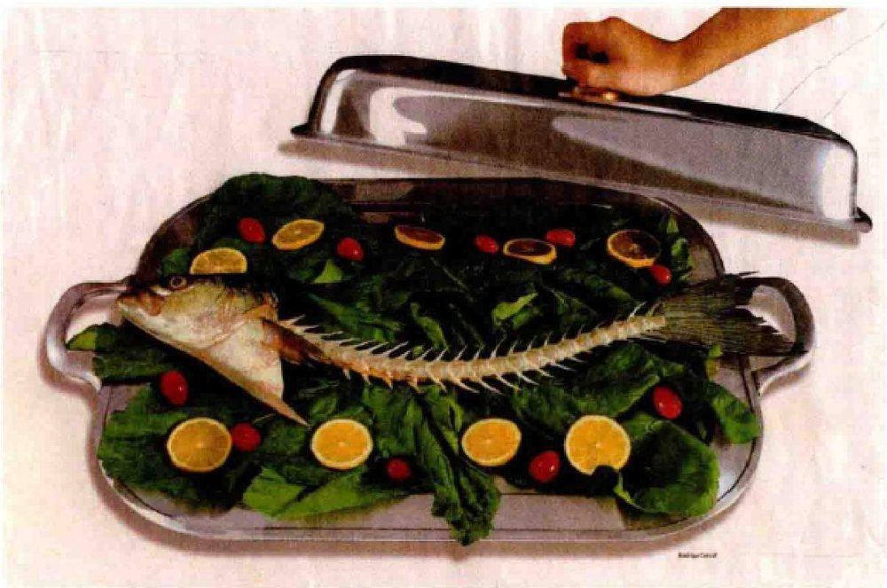
Study cues
- Of the twenty rules, which specific cut or change in your project corresponds to "create space" and which to "less is more"?
- Without photos, use only three shapes to create the relationship "one is approaching, two are moving away".
和諧之美：探索設計中的黃金比例
Scope. The first part of this volume spends only a few pages on the logic of proportion: the golden section, the golden rectangle, spirals, root rectangles, and the Fibonacci, arithmetic and geometric sequences. The great majority of the book is logo, brand and packaging cases, showing how these proportions land in contemporary visual identity. It is not the analysis of the human body, architecture and masterpieces found in Elam's books, nor Asakura's composition exercises. How to read it: first learn one construction method, then look for the division lines in the cases.
Main ideas
- Excellent work has depth in its proportions and shows a rational approach to making. Here proportion is a design decision, not a coincidence measured after the fact.
- The golden section, root rectangles and the three sequences are listed side by side. The golden ratio is only one of these logics.
- The cases focus on brand identity: how a logo is controlled by rectangles, spirals or sequences, and then extended to packaging and identity.
- One visual system can govern illustration, branding and products at the same time, and relate to interior space. Proportion is the shared measure of this system.
- The book suits designers and design students looking up cases; it is not suitable as the only geometric proof.
Methods
- First practise just one construction method from the front of the book (golden rectangle or root rectangle); once you can draw it accurately, turn to the cases.
- For each case, add in pencil the divisions you think are there. If you cannot add the lines, do not claim it "uses the golden ratio".
- Record the uses of the three sequences separately: arithmetic suits an even rhythm, geometric suits rapid enlargement, and Fibonacci suits growth from small to large.
- If the case is a full identity, check whether the logo, packaging and space share the same proportion, rather than only the logo having a spiral.
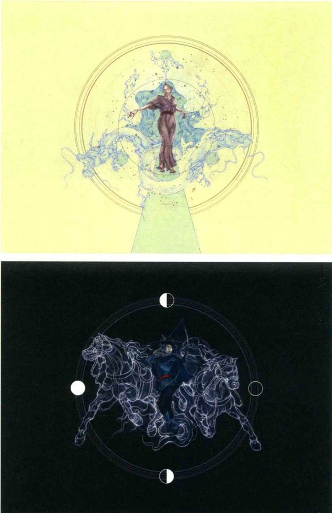
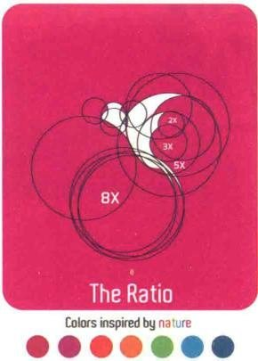
Study cues
- Instead of the golden spiral, use an arithmetic sequence to size the three circles of a logo. How does the rhythm differ from the golden spiral?
- Choose a brand from the book and point out where proportion appears in the logo, packaging and space. Which of these is missing?
分寸設計：發現黃金比例恆久之美
Original title: Geometry of Design: Studies in Proportion and Composition, 2nd edition (revised and updated)
Author: Kimberly Elam
Scope. This is the Chinese translation of the second edition of 《設計幾何學》. Chapter 1 is still about proportion in the human body and nature, Chapter 2 covers architectural proportion and Le Corbusier's regulating lines, and only after that come analyses of posters, products, pictograms and corporate logos. Compared with the first edition of 《設計幾何學》, this volume adds the construction of rabatment (rotating the short side of a rectangle onto the long side) and a group of pages on twentieth-century works. 《黃金比例》 stops at the perception and drawing of proportion; this volume applies proportion to specific modern designed objects.
Main ideas
- The preference for 1:1.618 can be traced back to Stonehenge, Greek art and the Renaissance, and can also be seen in the growth of the human body, animals and plants.
- The rectangle experiments of Fechner and Lalo are used again to show that the preference has been measured and does not rest on legend.
- The power of the golden section is that it unifies the parts while letting each part keep its own character.
- Rabatment uses a square to find secondary areas inside a rectangle. An upright rectangle likewise has secondary rabatments in the horizontal direction.
- The analyses of works line up circle centres and diagonals with letters and bodies. For example, a figure's head, eye and hand can fall on the same diagonal.
Methods
- First do a left and right rabatment on a blank rectangle, mark the secondary area where the squares overlap, then place text or images.
- When analysing a poster, find at least one circle and one diagonal, and write down three things they hold in place (letters, a face, a gesture or something else).
- From the architectural cases, borrow only the method of drawing regulating lines, not the style of the building façades.
- Read it against the table of contents of the second edition: take separate notes on the three sections (human body, architecture, modern works), so that you do not apply the proportions of Stonehenge directly to a business card.
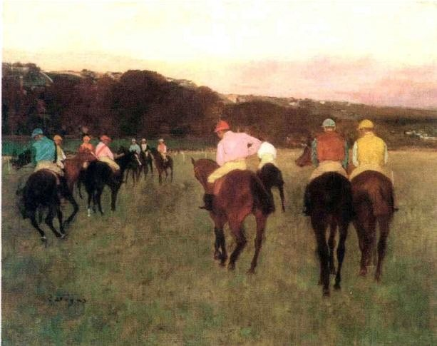
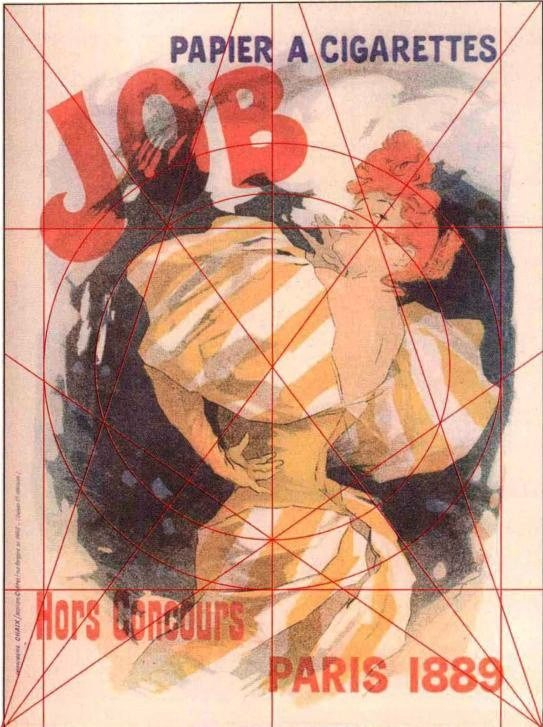
Study cues
- Draw the horizontal secondary rabatment areas in an upright rectangle. Which area should the headline go into for you to have used this method?
- For what kinds of picture would you use the √2 analysis of the first edition, and the rabatment of this volume?
設計元素：平面設計樣式（英文原書）
Original title: Design Elements: A Graphic Style Manual
Scope. This is the English original of Design Elements: A Graphic Style Manual. Its chapters run: the twenty rules of good design, form and space, colour fundamentals, choosing type, and the world of images. The Chinese series edition, the "good form" edition and the two other scans all come from this book. Use it to check the original wording of the rules, such as "communicate, don't decorate", and how the image chapter distinguishes the literal from the non-literal. For the Chinese lesson text of the rules and the large number of work pages, rely mainly on the translations.
Main ideas
- Design is both a verb and a noun: the process of imagining and its result. It must add meaning: explain, simplify, persuade, and sometimes entertain.
- Graphic design and advertising both inform the public, but the aim of graphic design is to make the message clear and to turn it into an emotional experience.
- The twenty rules start with "Have a concept" and include one visual voice, the one-two punch, intentional colour, movement and stillness, and avoiding symmetry for symmetry's sake.
- The form chapter looks at form and space separately, then discusses kinds of form. This is the foundation for the later chapters on colour and type.
- Images are not all realistic. The book divides them into literal, non-literal and other.
Methods
- Next to each Chinese rule, copy the original English sentence. Where the translation is vague, go by the verb in the original (communicate, create, squish).
- When reading the image chapter, sort material into three columns: literal, non-literal, other. Put one example of your own in each column.
- Use the original book's chapter order to check your work: concept and form come first, then colour and type. If the order is reversed, you are usually decorating.
- When comparing the Chinese and English, compare only the rules; do not translate the descriptions of work sentence by sentence.
Study cues
- Write down in English three rules you remember. Which rule's verb is hardest to carry out in your work?
- Is the image in your next poster literal, non-literal or other? How does this category affect the tone of the text?
寫給大家看的設計書（第3版）
Original title: The Non-Designer's Design Book: Design and Typographic Principles for the Visual Novice, 3rd edition
Author: Robin Williams
Scope. This volume is the 3rd edition of the principles textbook. The story of the Joshua tree is used to show that you only see something once you can name it. The four principles are contrast, repetition, alignment and proximity, followed by colour, categories of type and type contrast. 《實例與創意》 is projects and self-tests; the 4th edition goes into more detail on reviewing the principles, colour models, and tips for applications such as business cards and flyers. Read this volume first and fix the names of the four principles firmly in your mind.
Main ideas
- The order of learning is: learn the four, admit that you have not been using them, then apply them. Only when you can state the problem can you control the layout.
- Contrast: if elements are not the same, make them clearly different. It usually decides whether a reader looks at the page in the first place.
- Repetition: repeat colours, shapes, line weights, typefaces and sizes throughout the piece to build organisation and unity.
- Alignment: nothing should be placed at random. Every element should have a visual connection with another element.
- Proximity: related items sit close together and become one visual unit. In practice the four happen at the same time; you rarely use only one.
Methods
- When fixing a weak piece, work in order: proximity first (grouping), then alignment (find a line), then repetition (unify the parts), and finally increase the contrast.
- Do not make all type sizes the same or almost the same. The main headline and body text must be distinguishable at a glance.
- When working with colour, build tints and shades together; do not choose just one hue.
- Use the book's short quizzes to test yourself on type categories: oldstyle, modern, slab serif, sans serif, script, decorative.
Study cues
- Using the logic of the Joshua tree, point out a layout problem you have "seen but could not name" in the past. Which of the four principles does it belong to?
- Take a poster whose elements are almost all the same size, and change only the size contrast. Does the first word you read change?
設計元素：平面設計樣式
Original title: Design Elements: A Graphic Style Manual
Scope. This volume is another Chinese edition of 《設計元素：平面設計樣式》. Its title does not carry the series name, and its twenty rules and its explanation of form and space match the series edition. The sampled figures also fall on the same kind of pages: multiple contrasts on a poster, and image techniques that can be used in collage. When reading it alongside the series edition, use this volume to check plate page numbers and sentences; to read the rule lessons systematically, use 《好造型的設計元素》; to check the English verbs, use the English original.
Main ideas
- One visual language requires everything, from large pictures to small details, to reinforce everything else. One element that does not fit in weakens the whole message.
- Two type families are enough; a third needs a very strong reason. By changing only size and colour, even one typeface can create groups.
- Hierarchy is the order in which the audience takes in information. What is seen first from a distance should be the headline, not the decoration.
- Colour affects hierarchy and legibility, and can group unrelated things together (colour coding). An industry's usual colour is not a reason.
- Negative space should be designed. Collage, meanwhile, can bring together hand-scanned textures with photographs, silhouettes and blur.
Methods
- Read the twenty rules against the series edition one by one. Skip identical sentences and note different ones, so that your two sets of notes do not contradict each other.
- Use this volume's poster page to practise a "contrast checklist": line and texture, organic and geometric, large and small. All three pairs must be found in your work.
- When making a small collage sketch, require at least one treatment that is only practical on a computer (transparency, multiple exposure or blur), and write down the meaning it serves.
- Type exercise: use one family throughout, group only with size and colour, and make a one-page layout in the style of an annual report.


Study cues
- If sentences repeat between this volume and the series edition, how will your notes avoid copying them twice? Which volume's page numbers will you use?
- Make a layout with only one type family. What achieves the grouping?
國際平面設計基礎教程：規格設計（FORMAT）
Original title: Basics Design 01: Format
Scope. The format volume of the Basics Design course discusses the size, paper, folding and binding of objects. Books, magazines, posters, screens and brochures are covered separately, because lifespan, audience and cost change the format. The meaning of images is in the image volume, and the design process is in the thinking volume. This volume answers: how big should this thing be, what paper should it use, how should it fold, and how should it be bound?
Main ideas
- A book has to organise information together. The format is decided by the nature and amount of information, the expected lifespan, the audience and the cost.
- Paper is the starting point of design. Colour images need paper that can hold ink; a book with a long life needs hard-wearing paper and a hard cover; a paperback spends its money on cover finishes instead.
- Binding changes the structure of reading. A Z-binding can split a book into two parts, using the cover as a bridge, so they can be separate or together.
- Folded leaflets have their own types: a meeting fold is two Z-folds closing towards the middle; a self-cover fold uses larger first two panels to wrap the rest of the folds.
- Greyboard, glued binding, coated paper and transfer paper correspond respectively to packaging, hardcovers, colour printing and labels; they are not interchangeable.
Methods
- Before starting any printed piece, fill in four boxes: lifespan, audience, cost, amount of information. These four decide the paper and binding, not the decoration.
- When making a folded leaflet, first make a full-size blank paper mock-up, mark the cover, the meeting panels and the reading order, then go to press.
- When choosing a binding for a book, write down whether readers will need to separate the two parts. If they will, consider a Z-binding or punched holes rather than a single perfect-bound book.
- Keep only three columns in your paper list: name, lifespan, and which finishes it can withstand. Choose by these three columns when you need paper.
Study cues
- For an event booklet meant to last one season and a portfolio meant to last ten years, which kinds of paper and binding should each lean towards?
- Make a meeting-fold Z-folded leaflet from blank paper. What information should go on the panel where the two sides "meet" in the middle?
國際平面設計基礎教程：圖形設計（IMAGE）
Original title: Basics Design 04: Image
Scope. The image volume of the same course is divided into basics, applied images and technology. The technical part deals with resolution, DPI and PPI, colour distortion, CMYK and RGB. The meaning part deals with semiotics, denotation and connotation, synecdoche, metaphor, metonymy, simile and analogy. The format volume handles paper and binding, and the thinking volume handles process; this volume handles what an image is, how it is cropped and how it is printed.
Main ideas
- Images trigger associations faster than words. A person placed next to a product links the product with a certain identity.
- Realistic images are mostly saved as bitmaps, while logos and line art are mostly saved as EPS. The format follows the kind of image.
- Resolution decides detail. Print commonly uses 300 DPI; PPI is the pixel density of a digital display; LPI is the line count of a halftone screen. The three are not the same number.
- Over-compressed JPGs lose colour. When enlarging beyond the limits of the original, the only option is to rescan or reshoot; turning the numbers up does not help.
- Cropping starts with finding the focal point. When the eyes are the focus of a portrait, the crop should make that focus stand out more, not keep more background.
Methods
- When filing each image, write down three things: its use (print or screen), its DPI or PPI, and its colour mode. If one is missing, the job is not done.
- Do cropping exercises in three steps: find the focal point, frame it, and crop until it is the first thing seen.
- Meaning exercise: for the same image, write one sentence of denotation (what it shows) and one of connotation (what it makes people think of).
- Convert print files from RGB to CMYK before output, and check the dark colours, which are the most likely to turn muddy.
Study cues
- Explain in which stage of production DPI, PPI and LPI each appear. Which one does your class project currently use?
- Choose a portrait, write one sentence of denotation and one of connotation, then crop it again to make the connotation clearer.
國際平面設計基礎教程：設計思維（THINKING）
Original title: Basics Design 08: Design Thinking
Scope. The thinking volume of the course presents design as seven stages: define, research, ideate, prototype, select, implement and learn. Each stage has thinking methods, such as sampling, feedback, group voting and scoring. The format and image volumes deal with objects and images; this volume deals with "which decision to make when". Like 《設計的方法》, it is about process, but this volume uses the steps and diagrams of a basics course and divides directions into divergence and convergence.
Main ideas
- Design is the process of turning a brief into a solution. Innovation should be high, but it is still bound by process, so that both economic and creative needs are met.
- The define stage sets the conditions for success; research gathers history, users and obstacles; ideation centres on the user's purpose and can use brainstorming.
- Prototyping is an initial confirmation; only selection eliminates the solutions that work but are not the best. Implementation delivers, and learning is for improving the designer.
- Feedback runs through every stage. Later feedback looks at execution, acceptance and results, and goes back into the process to make corrections.
- Basic directions can start from a known point: divergence spreads out in different directions from one common point; convergence is many individuals gathering towards one centre.
Methods
- For each project, write one line for each of the seven stages. If you cannot write the "define" line, do not move on to composition.
- After ideation, score as a group using agreed criteria, rather than letting the last person to speak decide.
- For the same brief, make one divergent and one convergent sketch, and see which direction fits the definition sentence better.
- When presenting, prepare both rough sketches and polished versions, and record how the audience responds differently to the two levels of finish.
Study cues
- Describe the project you are working on using the seven stages. Which stage have you actually stopped at now?
- For the same logo, draw one divergent direction and one convergent direction. Which fits your definition sentence better?
寫給大家看的設計書（第4版）
Original title: The Non-Designer's Design Book: Design and Typographic Principles for the Visual Novice, 4th edition
Author: Robin Williams
Scope. The 4th edition still centres on the four principles, but its contents separate review, colour and applications clearly. The colour chapter covers the colour wheel, complements, triads, analogous colours, monochromatic schemes, warm and cool colours, and CMYK versus RGB. The tips that follow apply to business cards, letterheads, flyers, newsletters, brochures, postcards, newspaper ads and résumés. The type chapter turns spaces after punctuation, quotation marks, apostrophes, hyphens, letter-spacing, widows and orphans into rules. Use the 3rd edition to build the principles; use this one to apply them to specific printed pieces and to handle typesetting details.
Main ideas
- The premise is the same: you can only fix a problem once you can name it. The four principles appear in almost every good design.
- A single principle rarely works alone. An example of contrast will also show proximity, alignment and repetition.
- Colour relationships can be learned: complementary, split complementary, analogous, shades and tints, and tone. Print and screen use different colour models.
- Each application has its own checklist. A business card, a flyer and a résumé are not the same layout shrunk down.
- Spacing separates amateurs from professionals: the space between letters, lines and paragraphs, around headings and at tabs must all be controlled by the designer. Leave only one space after punctuation.
Methods
- Finish the four review quizzes before moving on to the colour quiz. If the principles are not secure, do not start with the colour wheel.
- For each application, copy just three tips from the book onto a one-page checklist, for example one for business cards and one for flyers.
- When setting type, drop the habit of "two spaces after punctuation", and change apostrophes and quotation marks to curly quotes.
- Within one page, check for widows, orphans and letter-spacing. Fix spacing problems before adding another typeface.
Study cues
- Pick a business card or a flyer and redo it using only the tips in this book's section on it. Are you changing the hierarchy, or the paper size?
- Find one double space, one straight quote and one place with letter-spacing that is too wide in your own work.
平面設計的七大要素
Original title: The 7 Essentials of Graphic Design
Author: Allison Goodman
Scope. This book organises graphic design around seven essentials. It opens with research strategy, then gives a whole chapter to typography: the art of setting type and the history of typefaces. The research part asks you to write scenarios for real customers and to deal with design fees and production budgets. It is broader than Williams's four principles, putting research, series design and type history into the same foundation course. It is also more of a single-author textbook than 《平面設計法則》, which is a collection by several authors.
Main ideas
- Research can follow three paths: clarifying the problem and its answers, finding examples that already exist, and creating a unique scenario of use.
- A complete scenario covers who the customer is, why they buy, what price they expect, and what the project must finally achieve. The scenario gets the client and the designer to agree on a direction.
- For series design, first separate what changes from what stays the same. In the example of lighting packaging, the product image and number change, while the identity of the series stays the same.
- A budget splits into design fees and production costs. Estimate design fees as time per stage. Production costs need the printer's input, and you should not push production quotes on the client during the research stage.
- Typography is the one element that cannot exist without words. The weight, curves and handwritten qualities of a typeface can keep a set of letters consistent with each other.
Methods
- Write a half-page scenario for every project: who, in what setting, and what decision they need to make. If you cannot describe the customer, do not start on style.
- When designing a series, draw a table with "must change" in the left column and "must not change" in the right. The right column needs at least one of colour, typeface or graphic system.
- Quote in stages, and make the early payments larger than the later ones, so the client cannot take your concept and have someone cheaper finish it.
- For identity design, first write down the structural features of the letters (changes in weight, curves), then talk about personality.
Study cues
- For a series of packages, list three things that change and three that do not.
- Which structural feature keeps the letters of your logo consistent: weight, curves, or both?
綜合造型設計基礎
Author: Liu Guanzhong
Scope. This is a foundation textbook on form for industrial design. Its core is form-making, and the key to form-making is morphology: shape, posture and perception. Natural forms come from internal forces, external forces and the resultant force. Man-made forms are produced within the limits of material, structure, technology, craft, scale, texture and colour. It differs from Asakura's two-dimensional composition: Asakura trains you to organise visual elements, while this book asks every form to answer "why does it look like this?", and it builds paper, a single material, into the constraints of the exercises.
Main ideas
- Real forms divide into natural forms and man-made forms. The course deals mainly with real forms, rather than drawing shapes only as concepts.
- The internal forces of a natural form come from its substance, structure and growth; the external forces come from long-term pressure, pull and chemical action of the environment. What finally takes shape is the resultant force.
- The claws of a carnivore and the hooves of a herbivore differ in form because their purposes differ: claws must catch prey, hooves must stand and run.
- Man-made "making" means creating something from nothing according to human will. "Form" cannot chase beauty alone; it must emerge together with material, structure, technology and craft.
- The elements of form sit within a system. It is wrong to treat any one element in isolation; you must coordinate them dynamically according to the problem.
Methods
- When analysing any form, write three lines: purpose, internal forces (material and structure), external forces (environment and use). If one line is missing, you are still only looking at appearance.
- For the paper exercises, follow the book's constraints: for example 200 mm × 200 mm, a single kind of paper, and only cutting and folding to make triangular forms of different sizes.
- When comparing two natural objects (claw and hoof, or shell and bone), write only about how the form serves the function, not about "what it looks like".
- A critique of a proposal must mention principle, material, structure and scale together. Saying only that the proportions look good does not complete this lesson.
Study cues
- Use "purpose, internal forces, external forces" to explain the difference between a claw and a hoof.
- Make three triangular forms of different sizes from a 200 mm square of one kind of paper. Which cut is structural, and which cut is only about outline?
美國視覺設計學院用書：設計元素（平面設計樣式）
Original title: Design Elements: A Graphic Style Manual
Scope. This is another Chinese translation of 《設計元素：平面設計樣式》, with the series name given as "Textbooks". The text of the twenty rules is the same as in the series edition, including one visual language, two or three typefaces, hierarchy, and choosing colour by meaning. The pages sampled from this copy are different: one page covers how differences between elements are read as isolation or growth, and another covers how an image is rearranged in square, portrait and landscape formats. Cross-check the rules against the series edition; use these two pages to practise "the meaning of variation" and "format orientation".
Main ideas
- Good design makes every element reinforce the others. A neglected detail does not fit in with the rest.
- A change of typeface usually signals a change of function, so limit the uses of type in body content to two or three typefaces.
- Hierarchy is the order in which you want viewers to see the parts. Without a first point of focus, the information has no entry point.
- Difference between elements can be read as isolation and anxiety, or as growth, energy or a focus of force. The same change means different things in different contexts.
- For images, first look at their usual proportions and alignment, then imagine how they change in square, portrait and landscape formats, and only then decide on the size relationships between images.
Methods
- Make a progression of three elements. Note two readings beside it: isolation, or growth. Keep the one that matches your concept.
- Make square, portrait and landscape versions of the same photo, changing only the crop and alignment, not the filter. Choose the version that best keeps the focal point.
- Still use the twenty rules for the final check. This copy does not offer a different set of rules.
- When matching page numbers with the series edition, go by the rule titles, not the illustration page numbers. The image pages in the two scans are not the same.
Study cues
- Draw three shapes from small to large. Which arrangement looks "isolated", and which looks "growing"?
- Crop one photo as a square, a portrait and a landscape. Which one best keeps the focal point you want?
視覺原理
Original title: Principles of Visual Perception
Scope. This is a book on visual perception. It starts with "meaning", then covers the eye, the brain, figure and ground, coherence, and depth and mastery. It explains how the viewer's mind actively produces meaning, including afterimages and simultaneous contrast. It does not teach layout steps. Williams tells you how to lay out a page; this book tells you why a page is seen as figure, as ground, or as a story you never drew.
Main ideas
- The mind constantly adds meaning to stimuli, sometimes where none exists. Randomly paired pictures and words are often read as a witty remark.
- Babies already prefer patterned things, complex shapes and faces. The search for meaning is tied to survival.
- Meaningful material is remembered; meaningless syllables are easily forgotten. Memory techniques work by hanging meaningless numbers on meaningful images.
- When people cannot find meaning, they become tense, frustrated or even angry. Once a picture puzzle is solved, people laugh, because the tension is released.
- The eye and brain produce afterimages, and simultaneous contrast also occurs: stare at a shape and then look elsewhere, and you see an afterimage; identical patches of colour on different backgrounds do not look the same.
Methods
- When you finish an abstract composition, ask others to say "what it is". If everyone invents a different story, check whether you need a clearer focal point.
- Use simultaneous contrast to check colour patches: put the same grey on a black ground and a white ground, predict which side will look lighter, then compare with what you see.
- Use afterimage experiments only to understand the lingering effect. Do not treat an afterimage as a colour that can be printed.
- Figure-ground exercise: make the same shape readable both as an object and as a hole. Both readings must be identifiable.
Study cues
- Put the same grey on a black ground and a white ground. Which side looks lighter? Did the paint change, or did perception change?
- Why do random pictures paired with random words still often "seem to make sense"?
設計力：寫給大家的平面設計法則
Scope. This is an introduction for people without formal design training, including readers in marketing, PR and sales. It starts from design in everyday life: business cards, calendars, magazines. It then covers how to collect work you like, how to use professional tools, and the history within lettering. It is not a tutorial on Williams's four principles, nor a style manual of twenty rules. Its rule is: first see design in daily life and in objects, then make a flyer with very limited means.
Main ideas
- Everything around us, from bedsheets and toothpaste to fridges, has been designed. We see it every day without noticing, because the design already fits closely with our lives.
- A business card can go from a fixed format to an object that conveys the company's culture and the holder's personality. When the purpose differs (credibility, or a first impression), the design differs.
- A calendar's basic job is to let you read dates and leave space for notes. Only as a promotional item does it add fun through shape, seasonal details or the way pages are pulled out. A functional calendar with imprecise type fails because it is too plain.
- Magazine inside pages were once handled by typesetters. Once designers came in, headlines and body text could both become playful design, rather than just being filled into boxes.
- Collecting is a method: cut out images you like by theme, find out who made them, then use the same tools as professionals. Rough drafts can be done in pencil, and the drawing style itself shows skill.
Methods
- Photograph one day of your life and circle ten things that "have been designed". For each, write only one purpose: easy to use, good-looking, or more comfortable.
- When making an A4 event flyer, use only one typeface at first, and set the event background, aims and practical information into a hierarchy.
- Make functional calendars and promotional calendars separately. The first must make dates readable before anything else; only the second adds surprises of shape.
- Draw rough drafts in pencil, and keep them. Do not save only the finished artwork in software.
Study cues
- Make two calendars for one event: one only for reading dates, one that should make people feel the season. What does each one sacrifice?
- Lay out an A4 flyer with only one typeface. Does the hierarchy come from type size, weight, or position?
通用設計法則（英文版）
Original title: Universal Principles of Design
Authors: William Lidwell (with Kritina Holden and Jill Butler)
Scope. This is the English edition of Universal Principles of Design, with the same set of principles as the Chinese edition. This copy is useful as an index: the principles are listed by their original names and grouped by question, such as how to influence perception, how to help people learn, and how to improve usability. Read the Chinese edition for the explanations; use this copy to match the English terms when writing reports or looking up papers, so you do not translate Affordance, Chunking or Figure-Ground into a different set of words.
Main ideas
- The perception group includes affordance, alignment, figure-ground relationship, proximity, signal-to-noise ratio, visibility and more. They explain what people see first.
- The learning group includes chunking, hierarchy, legibility, recognition over recall, storytelling and the serial position effect. They explain how people remember.
- The use group includes 80/20, accessibility, the aesthetic-usability effect, confirmation, constraint, control and cost-benefit. They explain whether people can complete a task.
- The same principle can appear under several questions. Signal-to-noise ratio relates to perception as well as to learning.
- The table of contents is itself a method: choose a question first, then go to the principles, rather than reading from A to Z.
Methods
- When writing notes in Chinese, record the English name of each principle as well. In reports, follow this copy's spelling of the terms.
- When critiquing work, first choose one of the three question groups, and draw only three principles from that group, rather than applying twenty at once.
- Read one term you are likely to mistranslate (for example Affordance or Prägnanz) side by side with the Chinese edition, and write one sentence of your own definition for each.
- Use the index as a source for checklists; do not use the index page itself as an illustration.
Study cues
- Choose one English principle from each of the three groups (perception, learning, use), and write down its Chinese name and one example from your own work.
- Why can signal-to-noise ratio appear under both "perception" and "learning"?